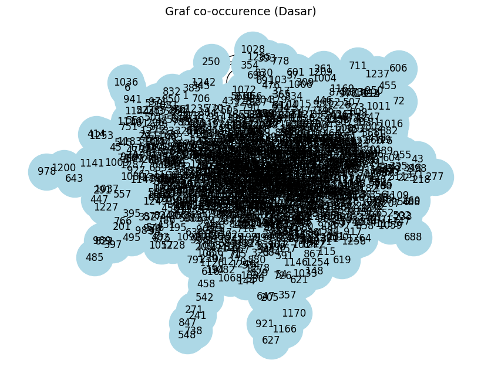
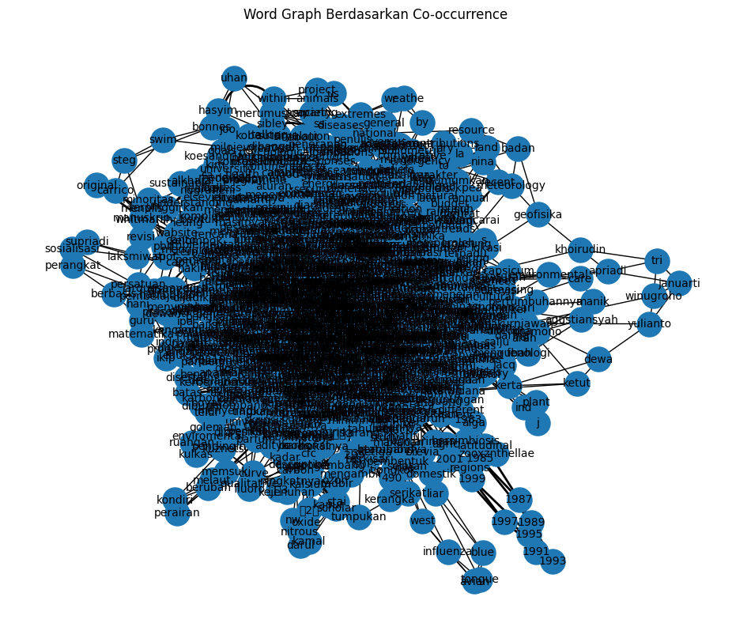
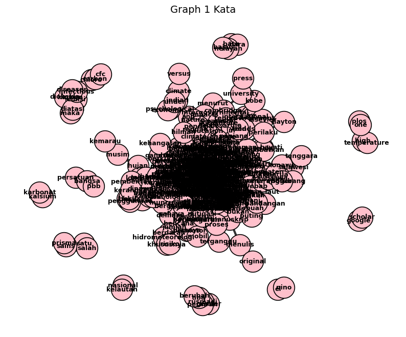
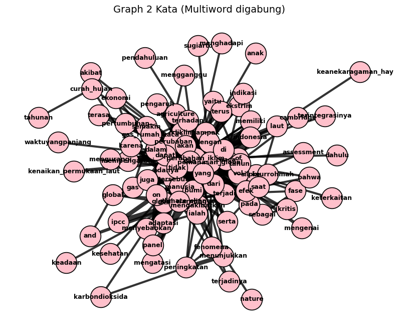

Word Graph - UAS#
Nama : Ahya Cinta Azka M.#
NIM : 220411100122#
Mata Kuliah : Pencarian dan Penambangan Web#
#Import Library
pip install --upgrade pymupdf
Collecting pymupdf
Downloading pymupdf-1.26.7-cp310-abi3-manylinux_2_28_x86_64.whl.metadata (3.4 kB)
Downloading pymupdf-1.26.7-cp310-abi3-manylinux_2_28_x86_64.whl (24.1 MB)
━━━━━━━━━━━━━━━━━━━━━━━━━━━━━━━━━━━━━━━━ 24.1/24.1 MB 93.9 MB/s eta 0:00:00
?25hInstalling collected packages: pymupdf
Successfully installed pymupdf-1.26.7
from google.colab import drive
drive.mount('/content/drive')
Mounted at /content/drive
%cd /content/drive/MyDrive/PPW/UAS/word_graph
/content/drive/MyDrive/PPW/UAS/word_graph
import pymupdf
doc = pymupdf.open("/content/drive/MyDrive/PPW/UAS/word_graph/paper global warming.pdf") # open a document
out = open("/content/drive/MyDrive/PPW/UAS/word_graph/output.txt", "wb") # create a text output
for page in doc: # iterate the document pages
text = page.get_text().encode("utf8") # get plain text (is in UTF-8)
out.write(text) # write text of page
out.write(bytes((12,))) # write page delimiter (form feed 0x0C)
out.close()
%%capture
!pip install nltk
import nltk
nltk.download('punkt') # hanya perlu sekali
nltk.download('punkt_tab') # opsional, untuk versi terbaru NLTK (≥3.8.2)
[nltk_data] Downloading package punkt to /root/nltk_data...
[nltk_data] Unzipping tokenizers/punkt.zip.
[nltk_data] Downloading package punkt_tab to /root/nltk_data...
[nltk_data] Unzipping tokenizers/punkt_tab.zip.
True
with open('/content/drive/MyDrive/PPW/UAS/word_graph/output.txt', 'r', encoding='utf-8') as file:
teks = file.read()
print(teks[:200]) # tampilkan 200 karakter pertama
Jurnal Phi: Jurnal Pendidikan Fisika dan Fisika Terapan. Vol 8 (1), 2022; ISSN: 2549-7162 Hal. 1-10
Ainurrohmah, S., Sudarti, S. 2022. Perubahan Ikliklim dan Pemanasan Global. Vol 8 (1), 2022 silpinu
# Install: pip install nltk
import nltk
#text = "Ini adalah kalimat pertama. Ini kalimat kedua? Ya!"
sentences = nltk.sent_tokenize(teks)
print(sentences)
# Output: ['Ini adalah kalimat pertama.', 'Ini kalimat kedua?', 'Ya!']
['Jurnal Phi: Jurnal Pendidikan Fisika dan Fisika Terapan.', 'Vol 8 (1), 2022; ISSN: 2549-7162 Hal.', '1-10 \nAinurrohmah, S., Sudarti, S. 2022.', 'Perubahan Ikliklim dan Pemanasan Global.', 'Vol 8 (1), 2022 silpinurrohmah@gmail.com 1 \n \n \n \n \n \n \n \nJenis Artikel: review article \nAnalisis Perubahan Iklim dan Global Warming \nyang Terjadi sebagai Fase Kritis \nSilfia Ainurrohmah1, dan Sudarti Sudarti1 \n1Program Studi Pendidikan Fisika, FKIP Universitas Jember \nCorresponding e-mail: silpinurrohmah@gmail.com \n \n \nKATA KUNCI: \nperubahan iklim, \nglobal warming, \ntemperatur \n \nDiserahkan: 25 Nov 2021 \nDirevisi: 16 Des 2021 \nDiterima: 18 Des 2021 \nDiterbitkan: 15 Jan 2022 \nTerbitan daring: 18 Jan 2022 \n \n \n \n \n \n1.', 'Pendahuluan \nPemanasan global (global warming) dan perubahan iklim yang terjadi tidak hanya telah dialami suatu negara \nsaja melainkan secara global termasuk Indonesia.', 'Indonesia termasuk negara besar yang mempunyai banyak \npulau dan lautan.', 'Luasnya lautan yang berada di wilayah Indonesia dapat memberikan efek terhadap global \nwarming dan perubahan iklim.', 'Indonesia juga sudah mengalami perubahan yang terbilang cukup pesat.', 'Perubahan tersebut terjadi karena gaya hidup dan kebutuhan manusia yang serba instan dan masifnya \nmenggunakan teknologi.', 'Gaya hidup dan aktivitas merusak lingkungan yang dilakukan manusia dapat \nJurnal Phi \nABSTRAK.', 'Perubahan iklim dapat dikatakan sebagai berubahnya kondisi \ntemperatur atau suhu dan pola cuaca dengan jangka waktuyangpanjang.', 'Perubahan iklim dapat mengancam berlangsungnya kehidupan manusia.', 'Global warming keadaan bertambahnya suhu atmosfer, laut, dan daratan \nbumi.', 'Perubahan iklim dan global warming akan membawa dampak di \nseluruh dunia dimana kehidupan umat manusia terganggu baikitudalam \nkesehatan, pertanian, hutan, infrastruktur, transportasi, pariwisata, \nenergi dan sosial.', 'Penelitian ini bertujuan mengatahui perubahan iklim \ndan global warming yang terjadi sebagai fase kritis.', 'Metode yang \ndigunakan ialah metode studi literatur, data didapat dari website, buku, \njurnal perpustakaan online.', 'Hasil penelitian yaitu global warming dan \nperubahan iklim saling berhubungan, manusia mulai memasuki fase \nkritis pemanasan global.', 'Jurnal Phi: Jurnal Pendidikan Fisika dan Fisika Terapan.', 'Vol 8 (1), 2022; ISSN: 2549-7162 Hal.', '1-10 \nAinurrohmah, S., Sudarti, S. 2022.', 'Perubahan Ikliklim dan Pemanasan Global.', 'Vol 8 (1), 2022 silpinurrohmah@gmail.com 2 \n \n \nmengakibatkan peningkatan suhu.', 'Intergovernmental Panel on Climate Change (IPCC) mengatakan dalam waktu \n15 tahun yaitu pada tahun 1990-2005 sudah terjadi peningkatan suhu global di bumi sekitar antara 0,15℃-0,3℃ \n(Mulyani, 2020).', 'Penggunakan teknologi tersebut juga tidak luput dari pemanfaatan hasil bumi, seperti minyak \nbumi, tembaga, gas, batu bara, nikel, aluminium dan lain sebagainya.', 'Pemanfaatan hasil bumi tersebut \ndigunakan sebagai bahan baku maupun bahan bakar.', 'Penggunaan teknologi yang berlebih dapat membuat \nbahan baku atau bahan bakar teknologi tersebut akan semakin langka, dan dapat merusak lingkungan.', 'Penggunaan kendaraan bermotor, mobil, asap pabrik dan lain sebagainya yang mengakibatkan adanya gas.', 'Gas \ntersebut selain menimbulkan pencemaran juga dapat menimbulkan adanya pemanasan global.', 'Pemanasan global ialah fenomena yang saat ini terjadi dan familiar di telinga manusia pada beberapa \ndekade terakhir (Putra dkk., 2019).', 'Pemanasan global ialah fenomena alam peningkatan suhu bumi yang terjadi \nsecara global.', 'Kajian yang terbaru untuk mengurangi penyebab dan efek pemanasan global perlu dilakukan \n(Septaria dkk., 2019).', 'Kajian ini akan menjadi literatur mengenai tingkatan pemanasan global yang sedang \ndialami saat ini serta dampak yang terjadi, sehingga masyarakat dapat mengurangi atau mengatasi \npenyebabnya.', 'Kenaikan suhu yang terjadi diakibatkan oleh bertambahnya konsentrasi gas rumah kaca akibat \naktivitas manusia, serta bidang industri meningkat pada pertengahan abad 20 (Wildan dkk., 2019).', '2.', 'Metode \nMetode yang digunakan ialah studi literatur.', 'Pengumpulan data dari metode studi literatur diambil dari berbagai \nsumber seperti internet, jurnal, buku.', 'Sumber dari internet mengambil dari google scholar, google books.', 'Dan \nwebsite.', 'Banyak literatur yang di telaah adalah 56 terdiri dari 3 buku, 52 jurnal dan 1 website.', 'Data yang sudah \ndidapatkan kemudian diuraikan dengan metode deskriptif.', 'Tidak hanya menguraikan dalam bentuk deskriptif \ntetapi memberikan pemahaman yang cukup dan mudah dimengerti (Kurnia dan Sudarti, 2021).', 'Deskriptif kualitatif ialah metode yang mendeskripsikan secara kompleks realitas dan sosial.', 'Deskripsi \ndapat mengulas lebih jauh tentang suatu masalah sehingga dapat menemukan petunjuk dari kejadian tersebut.', 'Deskriptif kualitatif berpusat pada 5W +1H, dimana untuk memperoleh fakta yang lebih jauh dan menyeluruh \n(Yuliani, 2018).', 'Karakteristik kualitatif ialah karakter yang asalnya dari latar belakang dan kenyataan yang \nsedang terjadi di masyarakat dengan mewawancarai atau langsung berada di lokasi kejadian.', 'Teori tersebut \ndiciptakan dari data dan kenyataan dengan penyajian dan analisis secara naratif (Subandi, 2011).', '3.', 'Pembahasan \n3.1 Global Warming dan Perubahan Iklim \nPemanasan global dijelaskan sebagai jangka panjang dari meningkatnya suhu rata-rata global.', 'Perubahan iklim \nglobal merupakan perubahan pola iklim secara global maupun regional yang tampak mulai pertengahan hingga \nakhir abad 20 ke depan yang berkaitan dengan me ningkatnya kadar karbondioksida (𝐶𝑂2) di atmosfer karena \npenggunaan bahan bakar fosil.', 'Masyarakat memberikan pandangan negatif mengenai pemanasan global dari \npada perubahan iklim.', 'Pandangan negatif tersebut disampaikan berupa deskripsi.', 'Volume pencaharian \npemanasan global lebih banyak dari perubahan iklim (Lineman dkk., 2015).', 'Pemanasan global ialah peningkatan \nsuhu atmosfer laut maupun darat yang ada di bumi.', 'Perubahan iklim ialah perubahan jangka panjang dalam \ncuaca global atau rata-rata suatu wilayah, dalam sepuluh tahun terakhir aktivitas industri dan manusia \nmenyebabkan perubahan iklim yang semakin cepat secara bertahap, adanya peningkatan suhu permukaan rata- \nrata setiap tahun.', 'Perubahan iklim juga memiliki dampak negatif yang nyata, seperti perubahan ekosistem dan \npenggurunan, kenaikan permukaan laut, banjir, dan kekeringan (Santos dan Bakhshoodeh, 2021).', 'Pemanasan global diakibatkan karena adanya aktivitas dari manusia seperti penggunaan bahan bakar \nkendaraan bermontor, batu bara, minyak bumi dan gas alam.', 'Seperti halnya menggunakan kendaraan bermotor, \nkendaraan bermotor tersebut mengeluarkan karbon dioksida (𝐶𝑂2 ) sebagai hasil pembuangan.', 'Selain itu ada \ngas-gas lain seperti uap air (𝐻2𝑂), Chloro Fluoro Carbon (CFC), Nitrous Oxide (𝑁2𝑂), Metana (𝐶𝐻4), Ozon (𝑂3) yang \ndikenal sebagai gas rumah kaca yang ke atmosfer.', 'Kejadian tersebut mengakibatkan tertahannya pantulan panas \nmatahari dari bumi yang mengakibatkan panas matahari tersebut tertahan dari bumi sehingga terpantul kembali \nke bumi, mengakibatkan efek rumah kaca.', 'Kondisi suhu di atmosfer mengalami peningkatan yang drastis.', 'Hal \ntersebut mengakibatkan terjadinya global warming.', 'Jurnal Phi: Jurnal Pendidikan Fisika dan Fisika Terapan.', 'Vol 8 (1), 2022; ISSN: 2549-7162 Hal.', '1-10 \nAinurrohmah, S., Sudarti, S. 2022.', 'Perubahan Ikliklim dan Pemanasan Global.', 'Vol 8 (1), 2022 silpinurrohmah@gmail.com 3 \n \n \nSemua cahaya matahari yang dipantulkan ke bumi, tidak semua diserap oleh bumi.', 'Sisa dari cahaya \nmatahari tersebut akan dipantulkan kembali melalui awan.', 'Namun, apabila tidak ada pemanasan global suhu di \nbumi dingin, makhluk hidup tidak dapat hidup di dalamnya.', 'Panas yang ditimbulkan efek rumah kaca \nmenjadikan bumi hangat.', 'Seperti di Mars, suhu sekitar -30℃ karena tidak memiliki gas rumah kaca (Pratama \ndan Parinduri, 2019).', 'Selain mengakibatkan global warming efek rumah kaca juga menyebabkan adanya \nperubahan iklim.', 'Perubahan iklim ialah sebuah permasalahan penting yang menjadi ancaman serius bagi semua manusia di \nbumi.', 'Satu hal yang pasti, permasalahan ini bukan sebuah permasalahan yang dapat selesai dengan sendirinya \ntanpa adanya upaya yang dilakukan manusia (Luthfia dkk., 2019).', 'Adanya perubahan iklim dapat mempengaruhi \nkehidupan manusia, seperti masalah kesehatan, perubahan iklim yang ekstrim serta perubahan iklim yang tidak \nmenentu dapat memunculkan wabah penyakit seperti demam berdarah, penyakit kulit, batuk, pilek.', 'Selain \nkesehatan, perubahan iklim dapat mempengaruhi dari sektor pertanian dan bahkan menjalar ke ekonomi.', 'Perubahan iklim dapat mengakibatkan gagal panen dari sektor padi, tebu, sayur dan lainnya.', 'Hal tersebut dapat \nberdampak pada pertumbuhan ekonomi.', 'Perubahan iklim dapat mengganggu keseimbangan alam yang normal \nseperti adanya badai karena perubahan curah hujan, kekeringan karena suhu meningkat dan air yang semakin \nlangka.', 'The Royal Society dan US National Academi of Science menggambarkan bahwa permasalahan iklim sudah \nterjadi dari tahun 1900-an (Nuraisah dan Kusumo, 2019).', 'Intergovermental Panel on Climate Change (IPCC) \nmenyatakan perubahan iklim menjadikan naiknya suhu di bumi yang memengaruhi manusia karena berdampak \npada spesies dan keanekaragaman hayati laut yang punah.', 'Perubahan Iklim menunjukkan nyata terhadap bumi \ndan isinya, dimana suhu rata-rata secara global mengalami kenaikan 1℃ dan berpengaruh pada meningkatnya \nbencana alam (Nur dan Kurniawan, 2021).', 'Indikasi perubahan iklim ialah suhu udara naik, kekeringan, banjir, musim hujan pendek (Aldrian, 2007).', 'Selain itu meningkatnya permukaan air laut dan iklim ekstrim (Ruminta dan Handoko, 2016a).', 'Periode tahun \n1899-2005 kenaikan rata-rata suhu global mencapai 0,760℃, periode 1961-2003 kenaikan permukaan air laut \nrata-rata global sebesar 1,8 mm pertahun, intensitas hujan dan banjir meningkat, frekuensi kekeringan dan erosi \nmeningkat, dan cuaca ekstrim (El Nino, La Nina, puting beliung, hailstone dan siklon) juga meningkat (IPCC, \n2007).', 'Stasiun Klimatologi Indonesia di 13 tempat, terdapat peningkatan jumlah curah hujan tahunan berkisar \nantara 490 mm per tahun (Sulawesi Selatan) hingga 1400 mm per tahun (Jawa Timur), suhu siang dan malam \nhari meningkat antara 0,5-1,1℃ dan 0,6-2,3℃ (Syahbuddin dkk., 2004).', 'Bagian barat Indonesia terdapat \npenurunan curah hujan tahunan sekitar 135 mm-860 mm per tahu, suhu siang dan malam hari meningkat antara \n0,2-0,4℃ dan 0,2-0,7℃.', 'Semakin cepat periode El-Nino di Indonesia yang awalnya 5-6 tahun sekali menjadi 2-3 \ntahun sekali (Runtunuwu dan Kondoh, 2008).', '3.2 Dampak Global Warming dan Perubahan Iklim \nBerbagai negara membuat kebijakan dalam mengurangi penyebab pemanasan global, hal ini dilakukan karena \ndamapaknya masif dan tidak dapat diprediksi, kesadaran sejak dini adanya pemanasan global diharapkan dapat \nmengurangi dan menjaga lingkungan tetap aman (Wildan dkk., 2019).', 'Global warming dapat mempengaruhi \ncuaca, dimana temparatur akan meningkat menyebabkan bumi bagian utara seperti gunung es mencair \nmengakibatkan daratan menyempit, salju ringan yang awalnya turun mungkin tidak lagi.', 'Adanya global warming terjadi fenomena yang mempengaruhi kehidupan, terutama manusia seperti cuaca \nekstrim, ikliim tak tentu, permukaan air laut bertambah karena gleetser dan es di kutub mencair (Septaria dkk., \n2019).', 'Perubahan tingginya muka laut, volume akan membesar dan semakin tinggi permukaan laut.', 'Tingginya \nmuka laut dapat mempengaruhi daerah di pantai seperti adanya erosi pantai dan meningkatnya bukit pasir.', 'Adanya kenaikan muka laut dan tanah menurun mengakibatkan pesisir daerah Semarang sering banjir sebab \nsaat air laut pasang dalam waktu kurang lebih 25 tahun terakhir.', 'Banjir tersebut dinamakan banjir rob, banjir \nyang menggenangi daerah yang lebih rendah dari muka air laut saat pasang tertinggi (Wirasatriya dkk., 2006).', 'Wilayah pesisir Kabupaten Subang termasuk wilayah pesisir dengan perubahan garais pantai cukup tinggi.', 'Jurnal Phi: Jurnal Pendidikan Fisika dan Fisika Terapan.', 'Vol 8 (1), 2022; ISSN: 2549-7162 Hal.', '1-10 \nAinurrohmah, S., Sudarti, S. 2022.', 'Perubahan Ikliklim dan Pemanasan Global.', 'Vol 8 (1), 2022 silpinurrohmah@gmail.com 4 \n \n \nPerubahan tersebut dibarengi dengan akresi dan erosi.', 'Faktor penyebabnya pengalihan fungsi lahan mangrove \ndan perubahan iklim global melalui kenaikan muka air laut serta peningkatan fenomena ekstrim diprediksi \nmemperparahkondisi berbagai kawasan pesisir secara global (Handiani dkk., 2019).', 'Sektor pertanian juga berdampak adanya global warming, seperti pada lahan pertanian tropis semi kering \ndi beberapa daerah Afrika mungkin tidak dapat tumbuh.', 'Sektor pertanian rentan terhadap perubahan iklim \nkarena dalam pertanian bergantung pada kondisi cuaca dan iklim (Aggarwal, 2008).', 'Diprediksi bahwa hasil \ngandum di Australia tenggara menjadi dampak adanya perubahan iklim, hasil menunjukkan peningkatan \nkarbondioksida (𝐶𝑂2 ) bisa mengurangi hasil gandum dengan rata-rata sekitar 25% (Kang dkk., 2009).', 'Indonesia \nmerupakan negara agraris, adanya perubahan iklim saat hujan, perubahan curah hujan menjadi resiko besar, \nbanyak aktivitas pertanian yang bergantung hujan (Ruminta, 2016).', 'Produksi padi turun signifikan karena \nkekeringan dan banjir yang berkelanjutan hasil dari peubahan iklim, pengelolaan tata air yang tidak baik \nmenyebabkan kapasitas air tanah terlalu rendah atau terlalu tinggi (Ruminta dan Handoko, 2016b).', 'Suhu tinggi \nselama fase kritis perubahan iklim mengganggu perkembangan, proses berbunga tanaman.', 'Suhu tinggi dan \nkekeringan mengakibatkan bencana pada lahan pertanian.', 'Hal tersebut dapat menimbulkan ledakan hama dan \npenyakit tanaman (Ruminta dkk., 2018).', 'Hewan dan tumbuhan akan kehilangan sumber makanannya karena manusia sudah menguasainya.', 'Hewan \ndan tumbuhan sulit berpindah sebab beberapa lahan sudah dikuasai manusia.', 'Hewan akan bermigrasi ke atas \npegunungan atau kutub dan tumbuhan mengubah arah pertumbuhannya, mencari daerah baru yang tidak \nterlalu hangat.', 'Namun manusia menghalangi karena adanya pembangunan.', 'Hewan yang bermigrasi akan \nterhalang oleh kota-kota dan tumbuhan kehilangan lahannya.', 'Kemungkinan beberapa spesies yang tidak mampu \nberpindah akan musnah (Leu, 2021).', 'Hewan dan tumbuhan kesulitan atau tidak mampu berpindah diakibatkan \nterhalang oleh kota-kota.', 'Adanya kota-kota tersebut menggunakan lahan hijau atau area hutan yang dijadikan \npermukiman.', 'Sehingga area hutan berkurang yang meyebabkan punahnya berbagai jenis spesies, dampak lain \ntermasuk adanya efek gas rumah kaca dari kota-kota tersebut (Novalia, 2017).', 'Hilangnya hutan juga \nmemengaruhi produktivitas oksigen (𝑂2) karena tumbuhan mulai berkurang, sehingga tidak dapat melakukan \nproses fotosintesis (Zhang dkk., 2020).', 'Tanaman bisa mengalami kerusakan fisik sebab suhu tinggi, diprediksi \nrata-rata 17% penurunan hasil panen kenaikan suhu udara tiap 1℃ (Lobel dan Anser, 2003).', 'Perubahan suhu membawa dampak pada ukuran dan berat daun tanaman tropis dan laju fotosintesis \n(Garruna dkk., 2014).', 'Perubahan iklim membawa dampak terhadap fisiologis tanaman yang mempengaruhi \npertumbuhan dan prosuksi tanaman (Timotiwu dkk., 2021).', 'Perubahan iklim yang terjadi juga mengakibatkan \nhewan dan tumbuhan tidak dapat beradaptasi mati.', 'Tanaman yang mati mengakibatkan hewan herbivora dapat \nmeti karena minimnya tanaman yang digunakan untuk bertahan hidup (Fath, 2021).', 'Jangka panjangnya \nmengakibatkan hewan karnivora mengalami kematian karena berkurangnya hewan herbivora (Hidayati dan \nSuryanto, 2015).', 'Hewan ternak juga tidak dapat bertumbuh kembang karena minimnya tumbuhan untuk \nmakanan hewan ternak tersebut.', 'Beberapa tumbuhan yang ada menjadi tidak layak konsumsi hewan ternak \nkarena berbahnya genetik dan fisik tumbuhan.', 'Tumbuhan yang tidak layak konsumsi tersebut mengakibatkan \nhewan ternak mengalami kematian (Fath, 2021).', 'Perubahan iklim dapat mempengaruhi kualitas tumbuhan dari pertanian dan perkebunan.', 'Beberapa \ntumbuhan mengalami penurunan kualitas karena mempunyai daya tahan perubahan cuaca yang berbeda \n(Managi dan Kaneko, 2015).', 'Akibatnya dapat mati dan yang masih bertahan hidup akan mengalami penurunan \nkualitas dan fisik (Hetel dan De Lima, 2020).', 'Perubahan iklim mempengaruhi kelangsungan tanaman budidaya, \ndinamika populais hama dan musuh alami, perlu adanya upaya untuk mengantisipasi dampak tersebut dengan \nstrategi mitigasi dan adaptasi.', 'Strategi mitigasi sendiri bertujuan agar emisi gas rumah kaca dari lahan pertanian \nberkurang (Setiawati dkk., 2013).', 'Peningkatan gas rumah kaca mempengaruhi produksi tanaman dan \nketersediaan pangan (Chakrabarti dkk., 2013).', 'International Panel for Climate Change (IPCC) memperoyeksikan \nkenaikan suhu 1,8-4℃ menjelang tahun 2100 (IPCC, 2007).', 'Konsentrasi karbondioksida (𝐶𝑂2) menyebabkan \n\x0cJurnal Phi: Jurnal Pendidikan Fisika dan Fisika Terapan.', 'Vol 8 (1), 2022; ISSN: 2549-7162 Hal.', '1-10 \nAinurrohmah, S., Sudarti, S. 2022.', 'Perubahan Ikliklim dan Pemanasan Global.', 'Vol 8 (1), 2022 silpinurrohmah@gmail.com 5 \n \n \nkenaikan suhu, aspek fungsi, pertumbuhan dan perkembangan tanaman dapat terpengaruh sesuai jenis \ntanaman dan geografis (Chakrabarti dkk., 2013).', 'Organisasi Kesehatan Hewan Dunia (OIE) tahun 2009 mengatakan akibat dari perubahan iklim global, \nmuncul penyakit hewan baru atau penyakit muncul kembali.', 'Penyakit yang menyerang hewan domestik dan liar \nseperti blue tongue, avian influenza, west nile (Naipospos, 2010).', 'Kaitan penyakit hewan dengan iklim dan cuaca \nbersifat spatial yaitu iklim mempengaruhi penyebaran penyakit (Baylis dan Githeko, 2006).', 'Pemanasan global \ndapat menurunkan produktivitas tanaman pangan secara signifikan terutama daerah tropis.', 'Kepunahan spesies \ntanaman merupakan dampak dari pemanasan global.', 'Apabila semakin tinggi suhu lingkungan akan \nmengakibatkan terjadinya peningkatan traspirasi artinya membutuhkan air lebih banyak untuk diuapkan \nsebagian besar melalui daun karena adaptasi terhadap suhu lingkungan yang tinggi.', 'Namun dampak negatif \nlainnya muncul yakni masalah pada fotosintesis.', 'Pada fotosintesis memerlukan air.', 'Dampak lain yaitu produksi \noksigen (𝑂2) yang diperlukan manusia.', 'Apabila proses fotosintesis terganggu maka produksi oksigen (𝑂2 ) juga \nakan berkurang (Sugiarto, 2019).', 'Pemanasan global dapat mengganggu hayati laut.', 'Salah satunya terumbu karang dari jenis hermatifik yaitu \nhewan karang pembentuk kerangka karang dari tumpukan kapur atau kalsium karbonat ( 𝐶𝑎𝐶𝑂3) sebagai hasil \nfotosintesis jutaan alga zooxznthellae yang bersimbiosis dalam jaringan hewan karang tersebut.', 'Namun \nkenaikan suhu mengganggu zooxanthellae untuk fotosintesis dan memacu produksi kimia berbahaya yang \ndapat merusak sel mereka (Latuconsina, 2010).', 'Peningkatan karbondioksida (𝐶𝑂2) menyebabkan perubahan \nsenyawa kimia karbon (𝐶 ) di permukaan laut, terjadi penurunan pH dan konsentrasi ion karbonat (𝐶𝑂3 2− ) yang \nbisa menurunkan kejenuhan kalsium karbonat (𝐶𝑎𝐶𝑂3 ) (Dahuri, 2003).', 'Perubahan iklim juga dapat mengakibatkan pergeseran dalam reproduksi dan pertumbuhan, contoh \nmigrasi burung terjadi lebih awal yang mengakibatkan proses reproduksi terganggu karena telur tidak dapat \ndibuahi (Lubis, 2011).', 'Kesehatan manusia juga berdampak, ilmuan memprediksi akan ada banyak orang \nmengidap penyakit atau meninggal karena panas.', 'Penyakit yang biasa mewabah di daerah tropis yaitu demam \nberdarah (Pratama dan Parinduri, 2019).', 'Perubahan iklim juga dapat mempengaruhi gender, saat dampak \nperubahan iklim masuk suatu wilayah dan wilayah tersebut didiami masyarakat maka menempatkan perubahan \niklim dalam sosiologis penting, termasuk perspektif gender sebab perubahan iklim hadir di tengan ruang \nsosiologis yang di dalamnya terdapat relasi gender (Rusmadi, 2017).', 'Dilihat dar perspektif sosiologi dampak \nyang dirasakan berbeda antar kelompok seperti kelompok minoritas yang terpinggirkan, orang tua, anak-anak.', 'Perubahan iklim terasa berbeda antara laki-laki dan perempuan.', 'Laki-laki dan perempuan memiliki peran yang \nberbeda dalam keluarga, serta memiliki persepsi berbeda mengenai rencana.', 'Aspek sosial yang dialami ialah \nhilangnya mata pencaharian bagi kawasan pesisir karena kenaikan permukaan air laut dan nelayanlah yang \nmenjadi korban \n \n3.3 Mengatasi Global Warming dan Perubahan Iklim \nPemanasan global berasal dari aktivitas manusia mulai dari pembakaran bahan bakar fosil, industri, \npenggundulan hutan yang mengakibatkan adanya emisi karbon dengan dampak yang timbul yaitu efek rumah \nkaca yang mengakibatkan efek jangka panjang te rhadap kehidupan.', 'Persoalan mengenai global warming dan \nperubahan iklim bukan persoalan yang bisa diselesaikan sendiri tanpa adanya upaya untuk melakukan aksi \nnyata (Luthfia dkk., 2019).', 'Pemerintah dasarnya sudah mempunyai infrastruktur berupa sistem, aturan, \nkebijakan yang kuat dalam menanggapi ancaman perubahan iklim.', 'Permasalahannya yaitu individu yang \nberperan memberikan dampak nyata melalui perilaku, dimana keterkaitan penyelesaian perubahan iklim \ndengan perilaku manusia (Clayton dkk., 2015).', 'Perilaku individu yang tidak dapat beradaptasi mengikuti \nteknologi, sistem atau atauran yang sudah dibangun sebelumnya, maka adanya infrastruktur aturan tersebut \nmenjadi tidak efektif (Haryanto dan Prahara, 2017).', 'Pengaruh perilaku dalam individu yang berupaya menghadapi perubahan iklim ialah keyakinan bahwa \nperubahan terjadi saat ini serta pemahaman individu sejauh mana penyebab munculnya permasalahan \n\x0cJurnal Phi: Jurnal Pendidikan Fisika dan Fisika Terapan.', 'Vol 8 (1), 2022; ISSN: 2549-7162 Hal.', '1-10 \nAinurrohmah, S., Sudarti, S. 2022.', 'Perubahan Ikliklim dan Pemanasan Global.', 'Vol 8 (1), 2022 silpinurrohmah@gmail.com 6 \n \n \nperubahan iklim serta siapa yang bertanggung jawab dalam menangani permasalahan (Haryanto dan Prahara, \n2017).', 'Keyakinan sendiri dalam menggambarkan lebih lanjut bahwa perubahan iklim sedang terjadi saat ini \nakan menjdai faktor yang dapat menggerakkan individu untuk meraspon permasalahan perubahan iklim \ntersebut (Milfont dkk., 2015).', 'Strategi dalam menghadapi perubahan iklim perlu dikembangkan dan diarahkan pada rekayasa sosial agar \nmasyarakat dapat mengalami peruabahan secara sistematis dan terencana.', 'Kunci dalam perubahan iklim adalah \nadaptasi.', 'Adaptasi harus menjadi agenda pembangunan yang tahan terhadap dampak perubahan iklim yang \nterjadi saat ini dan antisipasi dampak ke depan.', 'Tujuan jangka panjang agenda adaptasi perubahan iklim ialah \nterintegrasinya adaptasi perubahan iklim ke dalam perancanaan pembangunan nasional (Hilman, 2009).', '3.4 Hubungan Global Warming dan Perubahan Iklim \nPemanasan global dan perubahan iklim memiliki keterkaitan satu sama lain.', 'Keduanya memiliki pengertian yang \nsama yaitu meningkatnya suhu atau temperatur.', 'Pemanasan global terjadi akibat adanya gas-gas rumah kaca \nyang terjebak dan tidak dapat keluar dari bumi sehingga suhu yang ada di bumi meningkat.', 'Begitu juga \nperubahan iklim dimana efek rumah kaca juga menjadi salah satu penyebabnya.', 'Aktivitas manusia yang \nmenggeluarkan gas-gas rumah kaca seperti mengendarai kendaraan motor, mobil yang dimana kendaraan \ntersebut mengeluarkan gas karbondioksida (𝐶𝑂2).', 'Aktivitas lain seperti asap industri yang mengeluarkan gas \nmetana (𝐶𝐻4).', 'Penggunaan pendingin ruangan, kulkas, parfum yang mengeluarkan gas Chloro Flouro Carbon \n(CFC).', 'Apabila aktivitas tersebut terus meningkat artinya aktivitas pemanasan global akan terus meningkat juga.', 'Hal ini menyebabkan suhu bumi juga semakin meningkat.', 'Peningkatan suhu bumi dari waktu ke waktu tersebut akan mengakibatkan adanya perubahan iklim.', 'Dahulu \nperubahan iklim mungkin tidak terasa, tetapi semakin berkembangnya teknologi serta kebutuhan manusia yang \nsekarang, perubahan iklim semakin terasa.', 'Perubahan iklim dapat dirasakan dengan adanya fenomena atau \nbencana alam yang terjadi seperti banjir yang mendominasi dari tahun 2010 sampai 2020 di Indonesia.', 'Wilayah \ndi Indonesia yang memiliki resiko paling tinggi yaitu Provinsi Jawa Barat (Azizah dkk., 2021).', 'Ada pula pada \npenelitian lain, perubahan iklim selama tahun 2012 sampai 2022 di wilayah Kecamatan Cisarua Kabupaten \nBogor berpengaruh pada jumlah kejadian bencana hidrometeorologi khususnya bencana longsor, banjir, banjir \nbandang, dan puting beliung (Azizah dkk., 2022).', 'Ada pun di wilayah internasional, pada tahun 2021 di wilayah \nEropa dan Amerika dilanda kebakaran hutan yang cukup parah, bahkan menelan korban jiwa.', 'Penyebabnya ialah \nkombinasi cuaca ekstrem dan kekeringan yang berkepanjangan di banyak wilayah (Azizah dkk., 2021).', 'Bahkan \nyang seharusnya masuk perhitungan musim hujan, menjadi kebalikannya terjadi musim kemarau bahkan \nmenyebabkan kebakaran hutan.', 'Begitu juga sebaliknya ketika seharusnya sudah memasuki musim kemarau, \nhujan masih turun dengan deras.', 'Pemanasan global dan perubahan iklim akan terus meningkat secara \nbersamaan jika manusia tidak dapat mengurangi aktivitas yang menyebabkan pemanasan global dan perubahan \niklim tersebut.', 'Perubahan Iklim sudah memasuki fase kritis.', 'Rencanya yang ingin dicapai yaitu dengan menjaga suhu \nglobal agar tetap di bawah 1,5℃ kemungkinan akan gagal.', 'Menurut analisa program lingkungan Persatuan \nBangsa-Bangsa (PBB) atau disebut UN Environment Programme (UNEP) mengkatakan bahwa bumi terus \nmenghangat diangka 2,7℃.', 'Hal ini dapat berdampak sangat besar bagi umat manusia.', 'Ini bisa menjadi sebuah \nperingatan atau kewaspadaan mengenai adanya pemanasan global ataupun perubahan iklim.', 'Indikator bahwa \ntelah terjadi perubahan iklim yaitu peningkatan suhu udara dan kenaikan permukaan laut menurut International \nPanel On Climate Change (IPCC) membuktikan gejala perubahan iklim dengan observasi yang menunjukkan \nterjadi peningkatan suhu udara dan lautan secara global, lelehnya es di kutub secara cepat dan luas serta \nmeningkatkan ketinggian permukaan air laut secara global (Azizah dkk., 2021).', 'Bumi membutuhkan \nkehangatan, tetapi kehangatan yang berlebihan dan di luar batas tidak baik untuk kerberlangsungan hidup.', 'Adanya suhu yang terus naik dan tidak bisa diatasi maka akan terjadi bencana iklim.', 'Semakin banyak bukti \nbahwa manusia mulai dekat atau bahkah sudah masuk dalam titik kritis.', 'Banyak hutan yang mulai hilang, \n\x0cJurnal Phi: Jurnal Pendidikan Fisika dan Fisika Terapan.', 'Vol 8 (1), 2022; ISSN: 2549-7162 Hal.', '1-10 \nAinurrohmah, S., Sudarti, S. 2022.', 'Perubahan Ikliklim dan Pemanasan Global.', 'Vol 8 (1), 2022 silpinurrohmah@gmail.com 7 \n \n \nkarbon dioksida (𝐶𝑂2) yang terus bertambah dari waktu ke waktu.', 'Temperatur rata-rata global diproyeksikan \nakan terus meningkat sekitar 1,8-4,0℃ di abad ini, bahkan menurut Intergovernmental Panel on Climate Change \n(IPCC) diproyeksikan sekitar antara 1,1-6,4℃.', 'Gambar 1.', 'Grafik Suhu Rata-Rata di Indonesia \nGambar 1 adalah grafik dari suhu rata-rata di Indonesia dengan satuan ℃.', 'Setiap tahun suhu mengalami \nperbedaan.', 'Suhu menunjukkan naik turun tiap tahun bahkan ada yang tetap.', 'Namun secara linear suhu \nmenunjukkan peningkatan dari tahun ke tahun.', 'Dari tahun 1981 sampai 2021 suhu rata-rata di Indonesia \nmenunjukkan peningkatan.', 'Gambar 2.', 'Grafik Suhu Anomali Rata-Rata \nGambar 2 adalah grafik suhu anomali rata-rata di Indonesia.', 'Suhu ditunjukkan dalam satuan ℃.', 'Pada grafik \nmenunjukkan bahwa suhu anomali di Indonesia mengalami naik turun bahkan ada beberapa menunjukkan suhu \ntetap sama dari tahun sebelumnya.', 'Secara linear suhu anomali rata-rata menunjukkan kenaikan dari tahun ke \ntahun.', 'Mulai tahun 1981 sampai 2021 suhu mengalami kenaikan.', 'Hutan Indonesia disebut paru dunia yang menyumbangkan oksigen yang diperukan makhluk hidup, dapat \nmenyerap karbondiosida (𝐶𝑂2) (Shafitri dkk., 2018).', 'Hutan ialah sumber daya alam memiliki peran di kehidupan, \nekonomi, sosial, budaya dan lingkungan (Widodo dan Sidik, 2018).', 'Apabila hutan sudah mulai hilang dan \nberkurang bumi akan bertambah hangat karena bumi sudah tidak imbang lagi, be rtambahnya karbon dioksinya \n(𝐶𝑂2) dan berkurangnya hutan.', 'Hutan di Indonesia mulai mengalami pengurangan, hal tersebut disebabkan oleh \nbeberapa faktor seperti kebakaran hutan.', 'Hampir setiap tahun Indonesia mengalami kebakaran hutan, tahun \n2015 tercatat 1,7 juta hektar yang terbakar (Adiputra dan Barus, 2018).', 'Pulau kalimantan dengan pemilik \nMalaysia kehilangan lahan hutan yaitu 2,29 juta hektar dan 1,85 juta hektar lahan perkebunan (Wahyuni dan \nSuranto, 2021).', 'Australia mengalami kebakaran hutan pada tahun 2019-1020 yang dikenal sebagai Black \n \n \n \n \n \n \n \n \n \n \n \n \n \n \n \n \n \n \n \n \n \n1981 \n1983 \n1985 \n1987 \n1989 \n1991 \n1993 \n1995 \n1997 \n1999 \n2001 \n2003 \n2005 \n2007 \n2009 \n2011 \n2013 \n2015 \n2017 \n2019 \n2021\n1981 \n1983 \n1985 \n1987 \n1989 \n1991 \n1993 \n1995 \n1997 \n1999 \n2001 \n2003 \n2005 \n2007 \n2009 \n2011 \n2013 \n2015 \n2017 \n2019 \n2021\n\x0cJurnal Phi: Jurnal Pendidikan Fisika dan Fisika Terapan.', 'Vol 8 (1), 2022; ISSN: 2549-7162 Hal.', '1-10 \nAinurrohmah, S., Sudarti, S. 2022.', 'Perubahan Ikliklim dan Pemanasan Global.', 'Vol 8 (1), 2022 silpinurrohmah@gmail.com 8 \n \n \nSummer.', 'Keadaan darurat diumumkan di seluruh New South Wales, Victoria dan Wilayah Ibu Kota Australia \n(Simanjuntak, 2021).', 'Menurut Aninda (2020) di New South Wales hampir 5 juta hektar hutan dan semak-semak \nterbakar, Lebih dari 1,1 juta hektar terbakar di Victoria, kawasan Gunung Gospers kehilangan lebih dari 510.000 \nhektar tanah akibat kebakaran.', 'Hal ini dapat mengakibatkan fase kritis perubahan iklim semakin meningkat.', 'Para peneliti juga menyoroti ketika adanya pandemi Covid-19 terjadi penurunan pencemaran tetapi tidak \ndengan tingkat karbondioksida (𝐶𝑂2) dan metana (𝐶𝐻4) yang ada di atmosfer, dimana mencapai titik tertinggi \nsepanjang masa di tahun 2021.', 'Data dari Greenpeace, Indonesia merupakan negara penyumbang emisi gas \nkarbon ketiga setelah Amerika Serikat dan Tiongkok, sekitar 80% diakibatkan oleh pembakaran hutan (Han dkk., \n2019).', 'Pemanasan global yang terus meningkat akan memengaruhi perubahan iklim.', 'Cuaca tidak akan menentu.', 'Adanya perubahan iklim dan cuaca yang tidak menentu sangat dirasakan masyarakat di wilayah pesisir.', 'Seperti \nyang dirasakan nelayan Bajau di peisisr Soropia, Kabupaten Konawe, Sulawesi Tenggara.', 'Dengan keaadan cuaca \nyang sulit dipresiksi seperti ketika melaut kondiri perairan tiba-tiba berubah, terutama memsuki musim timur \ngelombang laut lebih tinggi dari biasanya disertai angain kencang (Dewiyanti dkk., 2019).', 'Bahkan bisa terjadi \nperubahan iklim yang ekstrem.', 'Pemanasan global dan perubahan iklim tersebut memang saling memengaruhi.', 'Artinya apabila salah satu diantara keduanya dapat diatasi maka yang lain juga bisa teratasi.', '4.', 'Kesimpulan \nGlobal warming dan perubahan iklim tidak dapat terjadi begitu saja tanpa penyebabnya.', 'Semakin dibiarkan \nakan semakin merugikan dan pastinya berdampak terhadap manusia.', 'Penyebab terjadinya global warming dan \npemanasan global tidak lain manusia itu sendiri.', 'Manusia bisa memanfaatkan dan menggunakan kebutuhan \nyang sudah disediakan alam.', 'Namun, perlu adanya kesadaran serta kemauan manusia untuk lebih bijak \nmenggunakannya.', 'Keterlibatan manusia dalam mengatasi global warming dan perubahan iklim sangat diperlukan.', 'Karena \nbertahannya bumi adalah bertahannya manusia.', 'Apabila bumi ini sudah rusak dan tidak bisa dipertahankan \natau diselamatkan maka manusia sendiri yang akan menyesal.', 'Seperti halnya tempat tinggal, manusia akan \nmerasa bahagia dan nyaman berada di rumah apabila rumah yang di tempati aman dan layak.', 'Begitu juga bumi, \nkita akan merasa bahagia dan nyaman apabila bumi aman dari global warming dan perubahan iklim dan masih \nlayak untuk dihuni.', 'Keterlibatan Penulis \nSS merumuskan konsep.', 'SA melakukan analisis, menulis manuskrip original dan menulis manuskrip revisi.', 'Daftar Pustaka \nDaftar Pustaka dari Buku : \n \nDahuri, R. 2003.', 'Keanekaragaman Hayati Laut ; Aset Pembangunan Berkelanjutan.', 'Jakarta: Gramedia Pustaka Utama.', 'IPCC.', '2007.', 'The Synthesis Report of the Intergovernmental Panel on Climate Change.', 'Cambridge: Cambridge University Press.', 'Syahbuddin, H., D. Manabu, Yamanaka, dan E. Runtunuwu.', '2004.', 'Impact of Climate Change to Dry Land Water Budget in \nIndonesia: Observation during 1980-2002 and Simulation for 2010-2039.', 'Kobe: KObe University Press.', 'Daftar Pustaka dari Jurnal : \n \nAdiputra, A. dan B. Barus.', '2018.', 'Analisis risiko bencana kebakaran hutan dan lahan di pulau bengkalis.', 'Geografi Edukasi \nDan Lingkungan (JGEL).', '1(1):55–62.', 'Aggarwal, P. K. 2008.', 'Global climate change and indian agriculture: impacts, adaptation and mitigatio n. Indian Journal of \nAgricultural Sciences.', '78(10):911–919.', 'Aldrian, E. 2007.', 'Decreasing trends in annual rainfalls over indonesia: a threat for the national water resource?', 'Badan \nMeteorology Dan Geofisika \nAzizah, M., R. Khoirudin Apriadi, R. Tri Januarti, T. Winugroho, S. Yulianto, W. Kurniawan, dan I. Dewa Ketut Kerta Widana.', '2021.', 'Kajian risiko bencana berdasarkan jumlah kejadian dan dampak bencana di indonesia periode tahun 2010 – \n2020.', 'PENDIPA Journal of Science Education.', '6(1):35–40.', 'Azizah, M., A. Subiyanto, S. Triutomo, dan D. Wahyuni.', '2022.', 'Pengaruh perubahan iklim terhadap bencana hidrometeorologi \n\x0cJurnal Phi: Jurnal Pendidikan Fisika dan Fisika Terapan.', 'Vol 8 (1), 2022; ISSN: 2549-7162 Hal.', '1-10 \nAinurrohmah, S., Sudarti, S. 2022.', 'Perubahan Ikliklim dan Pemanasan Global.', 'Vol 8 (1), 2022 silpinurrohmah@gmail.com 9 \n \n \ndi kecamatan cisarua - kabupaten bogor.', 'PENDIPA Journal of Science Education.', '6(2):541–546.', 'Chakrabarti, B., S. D. Singh, V. Kumar, R. C. Harit, dan S. Misra.', '2013.', 'Growth and yield response of wheat and chickpea crop s \nunder high temperature.', 'Ind J Plant Physiol.', '18(1):7–14.', 'Clayton, S., P. Devine-Wright, P. C. Stern, L. Whitmarsh, A. Carrico, L. Steg, J.', 'Swim, dan M. Bonnes.', '2015.', 'Psychological \nresearch and global climate change.', 'Nature Climate Change.', '5(7):640–646.', 'Dewiyanti, S., A. Maruf, dan L. Indriyani.', '2019.', 'Adaptasi nelayan bajau terhadap dampak perubahan iklim di pesisir soropia \nkabupaten konawe, sulawesi tenggara.', 'Ecogreen.', '5(1):23–29.', 'Fath, M. A.', '2021. .', 'Literature review : pengaruh kualitas udara dan kondisi iklim terhadap perekonomian masyarakat.', 'Jurnal \nMedia Gizi Kesmas.', '10(2):329–324.', 'Garruna, H., R. R. Orellana, A. LarqueSaavedra, dan A. Canto.', '2014.', 'Understanding the physiological responses of a tropical \ncrop (capsicum chinense jacq.)', 'at high temperature.', 'PLoS ONE.', '9(11) \nHan, E. S., D. Goleman, R. Boyatzis, dan A. Mckee.', '2019.', 'Lahan dan hutan dalam skala besar.', 'Jurnal Of Chemical Information \nand Modeling.', '53(9):1689–1699.', 'Handiani, D. N., S. Darmawan, A. Heriati, dan Y. D. Aditya.', '2019.', 'Kajian kerentanan pesisir terhadap kenaikan muka air laut \ndi kabupaten subang-jawa barat.', 'jurnal kelautan nasional.', 'Kelautan Nasional.', '14(3):145–154.', 'Haryanto, H. C. dan S. A. Prahara.', '2017.', 'Yakinkah dengan adanya perubahan iklim.', 'INQUIRY Jurnal Ilmiah Psikologi.', '8(2):88– \n99.', 'Hetel, T. W. dan C. Z.', 'De Lima.', '2020.', 'Viewpoint: climate impacts on agriculture: searching for keys under the streetlight.', 'Food Policy.', '95 \nHidayati, I. N. dan S. Suryanto.', '2015.', 'Pengaruh perubahan iklim terhadap produksi pertanian dan strategi adaptasi pada \nlahan rawan kekeringan.', 'Jurnal Ekonomi & Studi Pembangunan.', '16(1):42–52.', 'Hilman, D. 2009.', 'Revitalisasi peraturan perundangan-undangan sebagai upaya strategis \npenanganan dampak perubahan \niklim di indonesia.', 'Jurnal Legislasi Indonesia.', '6(1):146–156.', 'Kang, Y., S. Khan, dan X. Ma.', '2009.', 'Climate change impacts on crop yield, crop water productivity and food security - a \nreview.', 'Progress in Natural Science.', '19:1665–1674.', 'Kurnia, A. dan Sudarti.', '2021.', 'Efek rumah kaca oleh kendaraan bermotor.', 'Jurnal Pendidikan Fisika Dan Sains.', '4(2):1–9.', 'Latuconsina, H. 2010.', 'Dampak pemanasan global terhadap ekosistem pesisir dan lautan.', 'Ilmiah Agribisnis Dan Perikanan.', '3(1):30–37.', 'Leu, B.', '2021.', 'Dampak pemanasan global dan upaya pengendaliannya melalui pendidikan lingkungan hidup dan pendidikan \nislam.', 'At Tadbir STAI Darul Kamal NW Kembang Kerang NTB.', '5(2):1–15.', 'Lineman, M., Y.', 'Do, J. Y. Kim, dan G. J. Joo.', '2015.', 'Talking about climate change and global warming.', 'PLoS ONE.', '10(9):1–12.', 'Lobel, D. B. dan G. P. Anser.', '2003.', 'Climate and management contributions to recent trends in u.s. agricultural yields.', 'scienc e. \nBREVIA.', '299(5609):1032.', 'Lubis, D. P. 2011.', 'Pengaruh perubahan iklim terhadap keanekaragaman hayati di indonesia.', 'Geografi.', '3(2):107–117.', 'Luthfia, A. R., N. N. Alimin, F. S. Nugraheni, dan E. N. S. Alkhajar.', '2019.', 'Penguatan literasi perubahan iklim di kalangan \nremaja.', 'Jurnal Abadimas Adi Buana.', '3(1):39–42.', 'Managi, S. dan S. Kaneko.', '2015.', 'Enviromental kuznets curve: bukti empiris hubungan antara pertumbuhan ekonomi dan \nkualitas lingkungan di indonesia.', 'Chinese Economic Development and the Environment.', '1–17.', 'Milfont, T. L., P. Milojev, L. M. Greaves, dan C. G. Sibley.', '2015.', 'Socio-structural and psychological foundations of climate \nchange beliefs.', 'New Zealand Journal of Psychology.', '44(1):17–30.', 'Mulyani, A. S. 2020.', 'Antisipasi terjadinya pemanasan global dengan deteksi dini suhu permukaan air menggunakan data \nsatelit.', 'CENTECH.', '2(1):22–29.', 'Naipospos, T. S. P. 2010.', 'Dampak perubahan iklim terhadap penyakit hewan.', 'CIVAS.', '4:2–11.', 'Novalia, T. 2017.', 'Neraca lahan indonesia: penyusunan neraca lahan indonesia untuk mendukung implementasi sustainable \ndevelopment goals.', 'Prossiding.', '245–254.', 'Nuraisah, G. dan R. A.', 'B. Kusumo.', '2019.', 'Dampak perubahan iklim terhadap usahatani padi di desa wanguk kecamatan \nanjatan kabupaten indramayu.', 'MIMBAR AGRIBISNIS: Jurnal Pemikiran Masyarakat Ilmiah Berwawasan Agribisnis .', '5(1):60–71.', 'Pratama, R. dan L. Parinduri.', '2019.', 'Penaggulangan pemanasan global.', 'Buletin Utama Teknik.', '15(1):91–95.', 'Putra, D. J., N. Hasnunidah, dan T. Jalmo.', '2019.', 'Pengaruh argument driven inquiry terhadap keterampilan berpikir kritis \npada materi sistem pencernaan.', 'Jurnal Bioterdidik.', '7(1):1–7.', 'Ruminta.', '2016.', 'Analisis penurunan produksi tanaman padi akibat perubahan iklim di kabupaten bandung jawa barat.', 'Kultivasi.', '15(1):37–45.', 'Ruminta dan Handoko.', '2016a.', 'Vurnerability assessment of climate \nchange on agriculture sector in the south sumatra \nprovince, indonesia.', 'Asian Journal of Crop Science.', '8(2):31–42.', 'Ruminta dan Handoko.', '2016b.', 'Vurnerability assessment of climate change on agriculture \nsector in the south sumatra \nprovince, indonesia.', 'Asian Journal of Crop Science.', '8(2):31–42.', 'Ruminta, R., H. Handoko, dan T. Nurmala.', '2018.', 'Indikasi perubahan iklim dan dampaknya terhadap produksi padi di \nindonesia.', 'Jurnal Agro.', '5(1):48–60.', 'Runtunuwu, E. dan A. Kondoh.', '2008.', 'Assessing global climate variability and change under coldest and warmest periods at \n\x0cJurnal Phi: Jurnal Pendidikan Fisika dan Fisika Terapan.', 'Vol 8 (1), 2022; ISSN: 2549-7162 Hal.', '1-10 \nAinurrohmah, S., Sudarti, S. 2022.', 'Perubahan Ikliklim dan Pemanasan Global.', 'Vol 8 (1), 2022 silpinurrohmah@gmail.com 10 \n \n \ndifferent latitudinal regions.', 'Agric.', 'Sci.', '9(1):7–18.', 'Rusmadi, R. 2017.', 'Pengarusutamaan gender dalam kebijakan perubahan iklim di indonesia.', 'Sawwa: Jurnal Studi Gender.', '12(1):91–110.', 'Santos, R. M. dan R. Bakhshoodeh.', '2021.', 'Climate change/global warming/climate emergency versus general climate research: \ncomparative bibliometric trends of publications.', 'Heliyon.', '7(11):e08219.', 'Septaria, K., B.', 'A. Dewanti, dan M. Habibbulloh.', '2019.', 'Implementasi metode pembelajaran spot capturing pada materi \npemanasan global untuk meningkatkan keterampilan proses sains.', 'Prisma Sains: Jurnal Pengkajian Ilmu Dan \nPembelajaran Matematika Dan IPA IKIP Mataram.', '7(1):27–37.', 'Setiawati, W., N. Sumarni, Y. Koesandriani, A. Hasyim, T. S. Uhan, dan R. Sutarya.', '2013.', 'Penerapan teknologi pengendalian \nhama terpadu pada tanaman cabai merah untuk mitigasi dampak perubahan iklim.', 'J. Hort.', '23(2):174–183.', 'Shafitri, L. D., Y. Prasetyo, dan Hani’ah.', '2018.', 'Analisis deforestasi hutan di provinsi riau dengan metode polarimetrik dalam \npengindraan jauh.', 'Jurnal Geodesi Undip.', '7(1):212–222.', 'Simanjuntak, S. B.', '2021.', 'Peran greenpeace dalam menangani kerusakan lingkungan pasca kebakaran hutan dan lahan di \naustralia tahun 2019-2020.', 'Skripsi.', '2.', 'Subandi.', '2011.', 'Qualitative description as one method in performing arts study.', 'Harmonia.', '11(2):173–179.', 'Sugiarto, A.', '2019.', 'Pemanasan global sebagai pertanda akhir zaman.', 'Environmental Care.', '1–5.', 'Timotiwu, P. B., T. K. Manik, Agustiansyah, dan E. Pramono.', '2021.', 'Fenologi dan pertumbuhan strawberry di dataran rendah \nsebagai kajian awal dampak perubahan iklim terhadap pertumbuhan tanaman.', 'Jurnal Agrotropika.', '20(1):1–8.', 'Wahyuni, H. dan S. Suranto.', '2021.', 'Dampak deforestasi hutan skala besar terhadap pemanasan global di indonesia.', 'JIIP: \nJurnal Ilmiah Ilmu Pemerintahan.', '6(1):148–162.', 'Widodo, P. dan A. J. Sidik.', '2018.', 'Perubahan tutupan lahan hutan lindung gunung guntur tahun 2014 sampai dengan tahun \n2017.', 'Wanamukti: Jurnal Penelitian Kehutanan.', '21(1):30–48.', 'Wildan, A. Hakim, D. Laksmiwati, dan Supriadi.', '2019.', 'Sosialisasi perangkat pembelajaran berbasis lingkungan untuk guru \nipa smp/mts di lombok barat dalam upaya mengurangi laju pemanasan global.', 'Jurnal Pendidikaan Dan Pengabdian \nMasyarakat.', '2(1):109–113.', 'Wirasatriya, A., A. Hartoko, dan Suripin.', '2006.', 'Kajian kenaikan muka laut sebagai landasan penanggulangan rob di pesisir \nkota semarang.', 'Pasir.', '1(2):31–42.', 'Yuliani, W. 2018.', 'Metode penelitian deskriptif kualitatif dalam perspektif bimbingan dan konseling.', 'Quanta.', '2(2):83–91.', 'Zhang, Y., P. Yang, Y. Gao, R. L. Leung, dan M. L. Bell.', '2020.', 'Health and economic impacts of air pollution induced by weathe r \nextremes over the continental u.s.’, environment international.', 'elsevier.', 'Environment International.', '143:1–18.', 'Daftar Pustaka dari Wabsite : \n \nBaylis, M. dan A. K. Githeko.', '2006.', 'The effects of climate change on infectious diseases of animals.', 'report within the project \n‘infectious diseases: preparing for the future’.', 'Foresight Website.']
import pandas as pd
df = pd.DataFrame(sentences, columns=['kalimat'])
print(df)
kalimat
0 Jurnal Phi: Jurnal Pendidikan Fisika dan Fisik...
1 Vol 8 (1), 2022; ISSN: 2549-7162 Hal.
2 1-10 \nAinurrohmah, S., Sudarti, S. 2022.
3 Perubahan Ikliklim dan Pemanasan Global.
4 Vol 8 (1), 2022 silpinurrohmah@gmail.com 1 \n ...
.. ...
533 Daftar Pustaka dari Wabsite : \n \nBaylis, M. ...
534 2006.
535 The effects of climate change on infectious di...
536 report within the project \n‘infectious diseas...
537 Foresight Website.
[538 rows x 1 columns]
df.to_csv('kalimat.csv', index=False, encoding='utf-8')
Pembuatan word graph dengan menggunakan https://www.geeksforgeeks.org/nlp/co-occurence-matrix-in-nlp/
Pre-pocessing#
import nltk
from nltk.corpus import stopwords
from nltk.tokenize import word_tokenize
from collections import defaultdict, Counter
import numpy as np
import pandas as pd
# Download NLTK resources
nltk.download('punkt')
nltk.download('stopwords')
# Load CSV (asumsi kolom berisi kalimat bernama 'kalimat')
df = pd.read_csv("/content/drive/MyDrive/PPW/UAS/word_graph/kalimat.csv")
# Gabungkan semua teks
text = " ".join(df.iloc[:, 0].astype(str))
# Preprocess the text
stop_words = set(stopwords.words('indonesian'))
words = word_tokenize(text.lower())
words = [word for word in words if word.isalnum() and word not in stop_words]
# Define the window size for co-occurrence
window_size = 2
# Create a list of co-occurring word pairs
co_occurrences = defaultdict(Counter)
for i, word in enumerate(words):
for j in range(max(0, i - window_size), min(len(words), i + window_size + 1)):
if i != j:
co_occurrences[word][words[j]] += 1
# Create a list of unique words
unique_words = list(set(words))
# Initialize the co-occurrence matrix
co_matrix = np.zeros((len(unique_words), len(unique_words)), dtype=int)
# Populate the co-occurrence matrix
word_index = {word: idx for idx, word in enumerate(unique_words)}
for word, neighbors in co_occurrences.items():
for neighbor, count in neighbors.items():
co_matrix[word_index[word]][word_index[neighbor]] = count
# Create DataFrame
co_matrix_df = pd.DataFrame(co_matrix, index=unique_words, columns=unique_words)
co_matrix_df
[nltk_data] Downloading package punkt to /root/nltk_data...
[nltk_data] Package punkt is already up-to-date!
[nltk_data] Downloading package stopwords to /root/nltk_data...
[nltk_data] Package stopwords is already up-to-date!
| parah | goals | kebalikannya | permasalahannya | beliung | sulit | j | dahuri | the | perhitungan | ... | stern | meningkat | pengertian | 80 | penyajian | didiami | hayati | widodo | diharapkan | membesar | |
|---|---|---|---|---|---|---|---|---|---|---|---|---|---|---|---|---|---|---|---|---|---|
| parah | 0 | 0 | 0 | 0 | 0 | 0 | 0 | 0 | 0 | 0 | ... | 0 | 0 | 0 | 0 | 0 | 0 | 0 | 0 | 0 | 0 |
| goals | 0 | 0 | 0 | 0 | 0 | 0 | 0 | 0 | 0 | 0 | ... | 0 | 0 | 0 | 0 | 0 | 0 | 0 | 0 | 0 | 0 |
| kebalikannya | 0 | 0 | 0 | 0 | 0 | 0 | 0 | 0 | 0 | 0 | ... | 0 | 0 | 0 | 0 | 0 | 0 | 0 | 0 | 0 | 0 |
| permasalahannya | 0 | 0 | 0 | 0 | 0 | 0 | 0 | 0 | 0 | 0 | ... | 0 | 0 | 0 | 0 | 0 | 0 | 0 | 0 | 0 | 0 |
| beliung | 0 | 0 | 0 | 0 | 0 | 0 | 0 | 0 | 0 | 0 | ... | 0 | 0 | 0 | 0 | 0 | 0 | 0 | 0 | 0 | 0 |
| ... | ... | ... | ... | ... | ... | ... | ... | ... | ... | ... | ... | ... | ... | ... | ... | ... | ... | ... | ... | ... | ... |
| didiami | 0 | 0 | 0 | 0 | 0 | 0 | 0 | 0 | 0 | 0 | ... | 0 | 0 | 0 | 0 | 0 | 0 | 0 | 0 | 0 | 0 |
| hayati | 0 | 0 | 0 | 0 | 0 | 0 | 0 | 1 | 0 | 0 | ... | 0 | 0 | 0 | 0 | 0 | 0 | 0 | 0 | 0 | 0 |
| widodo | 0 | 0 | 0 | 0 | 0 | 0 | 0 | 0 | 0 | 0 | ... | 0 | 0 | 0 | 0 | 0 | 0 | 0 | 0 | 0 | 0 |
| diharapkan | 0 | 0 | 0 | 0 | 0 | 0 | 0 | 0 | 0 | 0 | ... | 0 | 0 | 0 | 0 | 0 | 0 | 0 | 0 | 0 | 0 |
| membesar | 0 | 0 | 0 | 0 | 0 | 0 | 0 | 0 | 0 | 0 | ... | 0 | 0 | 0 | 0 | 0 | 0 | 0 | 0 | 0 | 0 |
1297 rows × 1297 columns
Networkx#
%%capture
pip install networkx
import networkx as nx
arr = co_matrix_df.to_numpy()
G=nx.from_numpy_array(arr)
import matplotlib.pyplot as plt
plt.figure(figsize=(8, 6))
nx.draw(G, with_labels=True, node_color='lightblue', node_size=2000, font_size=12)
plt.title("Graf co-occurence (Dasar)", fontsize=14)
plt.show()

labels = {i: word for i, word in enumerate(co_matrix_df.index)}
G = nx.relabel_nodes(G, labels)
G.number_of_nodes()
1297
G.number_of_edges()
5498
list(G.edges(data=True))
[('parah', 'menelan', {'weight': 1}),
('parah', 'kebakaran', {'weight': 1}),
('parah', 'hutan', {'weight': 1}),
('parah', 'korban', {'weight': 1}),
('goals', 'development', {'weight': 1}),
('goals', 'sustainable', {'weight': 1}),
('goals', 'nuraisah', {'weight': 1}),
('goals', 'prossiding', {'weight': 1}),
('kebalikannya', 'hujan', {'weight': 1}),
('kebalikannya', 'kemarau', {'weight': 1}),
('kebalikannya', 'musim', {'weight': 2}),
('permasalahannya', 'individu', {'weight': 1}),
('permasalahannya', 'berperan', {'weight': 1}),
('permasalahannya', 'perubahan', {'weight': 1}),
('permasalahannya', 'iklim', {'weight': 1}),
('beliung', 'puting', {'weight': 2}),
('beliung', 'bandang', {'weight': 1}),
('beliung', 'siklon', {'weight': 1}),
('beliung', 'azizah', {'weight': 1}),
('beliung', '2022', {'weight': 1}),
('beliung', 'nina', {'weight': 1}),
('beliung', 'hailstone', {'weight': 1}),
('sulit', 'cuaca', {'weight': 1}),
('sulit', 'dipresiksi', {'weight': 1}),
('sulit', 'melaut', {'weight': 1}),
('sulit', 'tumbuhan', {'weight': 1}),
('sulit', 'lahan', {'weight': 1}),
('sulit', 'keaadan', {'weight': 1}),
('sulit', 'hewan', {'weight': 1}),
('sulit', 'berpindah', {'weight': 1}),
('j', 'physiol', {'weight': 1}),
('j', 'temperature', {'weight': 1}),
('j', 'plant', {'weight': 1}),
('j', 'ind', {'weight': 1}),
('dahuri', 'keanekaragaman', {'weight': 1}),
('dahuri', 'buku', {'weight': 1}),
('dahuri', 'pustaka', {'weight': 1}),
('dahuri', 'perubahan', {'weight': 1}),
('dahuri', 'karbonat', {'weight': 1}),
('dahuri', '𝐶𝑎𝐶𝑂3', {'weight': 1}),
('dahuri', '2003', {'weight': 1}),
('dahuri', 'hayati', {'weight': 1}),
('the', 'environment', {'weight': 2}),
('the', 'understanding', {'weight': 1}),
('the', 'preparing', {'weight': 1}),
('the', 'over', {'weight': 1}),
('the', 'milfont', {'weight': 1}),
('the', 'synthesis', {'weight': 1}),
('the', 'panel', {'weight': 1}),
('the', 'in', {'weight': 2}),
('the', 'project', {'weight': 1}),
('the', 'threat', {'weight': 1}),
('the', 'development', {'weight': 1}),
('the', 'intergovernmental', {'weight': 1}),
('the', 'national', {'weight': 1}),
('the', 'canto', {'weight': 1}),
('the', 'baylis', {'weight': 1}),
('the', 'society', {'weight': 1}),
('the', 'githeko', {'weight': 1}),
('the', 'ipcc', {'weight': 1}),
('the', 'air', {'weight': 1}),
('the', 'sumatra', {'weight': 2}),
('the', 'water', {'weight': 1}),
('the', 'keys', {'weight': 1}),
('the', 'within', {'weight': 1}),
('the', 'effects', {'weight': 1}),
('the', 'physiological', {'weight': 1}),
('the', 'royal', {'weight': 1}),
('the', 'of', {'weight': 2}),
('the', 'for', {'weight': 2}),
('the', 'continental', {'weight': 1}),
('the', 'infectious', {'weight': 1}),
('the', 'south', {'weight': 2}),
('the', 'responses', {'weight': 1}),
('the', 'future', {'weight': 1}),
('the', 'streetlight', {'weight': 1}),
('the', 'langka', {'weight': 1}),
('the', 'report', {'weight': 3}),
('the', 'foresight', {'weight': 1}),
('the', 'utama', {'weight': 1}),
('the', 'food', {'weight': 1}),
('the', 'extremes', {'weight': 1}),
('the', 'sector', {'weight': 2}),
('the', 'under', {'weight': 1}),
('the', 'and', {'weight': 1}),
('perhitungan', 'hujan', {'weight': 1}),
('perhitungan', 'musim', {'weight': 1}),
('perhitungan', '2021', {'weight': 1}),
('perhitungan', 'masuk', {'weight': 1}),
('pratama', 'demam', {'weight': 1}),
('pratama', '2019', {'weight': 2}),
('pratama', 'kaca', {'weight': 1}),
('pratama', 'parinduri', {'weight': 3}),
('pratama', '1', {'weight': 1}),
('pratama', '5', {'weight': 1}),
('pratama', 'berdarah', {'weight': 1}),
('pratama', 'penaggulangan', {'weight': 1}),
('pratama', 'rumah', {'weight': 1}),
('be', 'imbang', {'weight': 1}),
('be', 'karbon', {'weight': 1}),
('be', 'rtambahnya', {'weight': 1}),
('be', 'bumi', {'weight': 1}),
('tropis', 'demam', {'weight': 1}),
('tropis', 'daun', {'weight': 1}),
('tropis', 'signifikan', {'weight': 1}),
('tropis', 'spesies', {'weight': 1}),
('tropis', 'pertanian', {'weight': 1}),
('tropis', 'daerah', {'weight': 2}),
('tropis', 'lahan', {'weight': 1}),
('tropis', 'mewabah', {'weight': 1}),
('tropis', 'laju', {'weight': 1}),
('tropis', 'berdarah', {'weight': 1}),
('tropis', 'kering', {'weight': 1}),
('tropis', 'tanaman', {'weight': 1}),
('tropis', 'semi', {'weight': 1}),
('tropis', 'kepunahan', {'weight': 1}),
('tropis', 'fotosintesis', {'weight': 1}),
('berupaya', 'individu', {'weight': 1}),
('berupaya', 'perubahan', {'weight': 1}),
('berupaya', 'menghadapi', {'weight': 1}),
('berupaya', 'perilaku', {'weight': 1}),
('triutomo', 'subiyanto', {'weight': 1}),
('triutomo', 'pengaruh', {'weight': 1}),
('triutomo', 'wahyuni', {'weight': 1}),
('triutomo', 'azizah', {'weight': 1}),
('buletin', 'global', {'weight': 1}),
('buletin', 'teknik', {'weight': 1}),
('buletin', 'pemanasan', {'weight': 1}),
('buletin', 'utama', {'weight': 1}),
('mencair', '2019', {'weight': 1}),
('mencair', 'septaria', {'weight': 1}),
('mencair', 'es', {'weight': 2}),
('mencair', 'kutub', {'weight': 1}),
('mencair', 'mengakibatkan', {'weight': 1}),
('mencair', 'daratan', {'weight': 1}),
('mencair', 'gunung', {'weight': 1}),
('2005', '2001', {'weight': 2}),
('2005', '2007', {'weight': 2}),
('2005', '2009', {'weight': 2}),
('2005', '2003', {'weight': 2}),
('subiyanto', 'wahyuni', {'weight': 1}),
('subiyanto', '1', {'weight': 1}),
('subiyanto', 'azizah', {'weight': 1}),
('ketut', 'kurniawan', {'weight': 1}),
('ketut', 'kerta', {'weight': 1}),
('ketut', 'widana', {'weight': 1}),
('ketut', 'dewa', {'weight': 1}),
('bertambahnya', 'diakibatkan', {'weight': 1}),
('bertambahnya', 'global', {'weight': 1}),
('bertambahnya', 'warming', {'weight': 1}),
('bertambahnya', 'suhu', {'weight': 2}),
('bertambahnya', 'gas', {'weight': 1}),
('bertambahnya', 'konsentrasi', {'weight': 1}),
('bertambahnya', 'atmosfer', {'weight': 1}),
('different', 'latitudinal', {'weight': 1}),
('different', 'regions', {'weight': 1}),
('different', '10', {'weight': 1}),
('different', 'silpinurrohmah', {'weight': 1}),
('5w', 'berpusat', {'weight': 1}),
('5w', 'kualitatif', {'weight': 1}),
('5w', 'memperoleh', {'weight': 1}),
('5w', 'dimana', {'weight': 1}),
('ditimbulkan', 'panas', {'weight': 1}),
('ditimbulkan', 'efek', {'weight': 1}),
('ditimbulkan', 'dalamnya', {'weight': 1}),
('ditimbulkan', 'rumah', {'weight': 1}),
('diperukan', 'menyumbangkan', {'weight': 1}),
('diperukan', 'oksigen', {'weight': 1}),
('diperukan', 'makhluk', {'weight': 1}),
('diperukan', 'hidup', {'weight': 1}),
('induced', 'pollution', {'weight': 1}),
('induced', 'by', {'weight': 1}),
('induced', 'air', {'weight': 1}),
('induced', 'weathe', {'weight': 1}),
('akresi', 'dibarengi', {'weight': 1}),
('akresi', 'perubahan', {'weight': 1}),
('akresi', 'erosi', {'weight': 1}),
('akresi', 'faktor', {'weight': 1}),
('baku', 'bakar', {'weight': 2}),
('baku', 'bahan', {'weight': 4}),
('baku', 'bumi', {'weight': 1}),
('baku', 'berlebih', {'weight': 1}),
('kenyataan', 'latar', {'weight': 1}),
('kenyataan', 'diciptakan', {'weight': 1}),
('kenyataan', 'data', {'weight': 1}),
('kenyataan', 'mewawancarai', {'weight': 1}),
('kenyataan', 'analisis', {'weight': 1}),
('kenyataan', 'masyarakat', {'weight': 1}),
('kenyataan', 'asalnya', {'weight': 1}),
('kenyataan', 'penyajian', {'weight': 1}),
('langsung', 'mewawancarai', {'weight': 1}),
('langsung', 'kejadian', {'weight': 1}),
('langsung', 'lokasi', {'weight': 1}),
('langsung', 'masyarakat', {'weight': 1}),
('didapatkan', 'diuraikan', {'weight': 1}),
('didapatkan', 'data', {'weight': 1}),
('didapatkan', 'metode', {'weight': 1}),
('didapatkan', 'website', {'weight': 1}),
('environment', 'international', {'weight': 3}),
('environment', 'unep', {'weight': 1}),
('environment', 'milfont', {'weight': 1}),
('environment', 'programme', {'weight': 1}),
('environment', 'daftar', {'weight': 1}),
('environment', 'pbb', {'weight': 1}),
('environment', 'milojev', {'weight': 1}),
('environment', 'continental', {'weight': 1}),
('environment', 'un', {'weight': 1}),
('environment', 'elsevier', {'weight': 2}),
('environment', 'and', {'weight': 1}),
('relasi', 'sosiologis', {'weight': 1}),
('relasi', 'gender', {'weight': 1}),
('relasi', 'rusmadi', {'weight': 1}),
('relasi', 'dalamnya', {'weight': 1}),
('kurniawan', 'nur', {'weight': 1}),
('kurniawan', 'yulianto', {'weight': 1}),
('kurniawan', 'winugroho', {'weight': 1}),
('kurniawan', 'indikasi', {'weight': 1}),
('kurniawan', 'dewa', {'weight': 1}),
('kurniawan', '2021', {'weight': 1}),
('kurniawan', 'alam', {'weight': 1}),
('literature', 'a', {'weight': 1}),
('literature', 'review', {'weight': 1}),
('literature', 'pengaruh', {'weight': 1}),
('literature', 'fath', {'weight': 1}),
('permukaan', 'international', {'weight': 1}),
('permukaan', 'kenaikan', {'weight': 4}),
('permukaan', 'laut', {'weight': 9}),
('permukaan', 'meningkatnya', {'weight': 1}),
('permukaan', 'tingginya', {'weight': 1}),
('permukaan', '2007', {'weight': 1}),
('permukaan', 'ikliim', {'weight': 1}),
('permukaan', 'perubahan', {'weight': 1}),
('permukaan', 'pesisir', {'weight': 1}),
('permukaan', '𝐶', {'weight': 1}),
('permukaan', 'data', {'weight': 1}),
('permukaan', 'udara', {'weight': 1}),
('permukaan', 'banjir', {'weight': 1}),
('permukaan', 'iklim', {'weight': 1}),
('permukaan', 'suhu', {'weight': 2}),
('permukaan', 'meningkatkan', {'weight': 1}),
('permukaan', 'air', {'weight': 6}),
('permukaan', 'karbon', {'weight': 1}),
('permukaan', 'volume', {'weight': 1}),
('permukaan', 'deteksi', {'weight': 1}),
('permukaan', 'ekstrim', {'weight': 1}),
('permukaan', 'peningkatan', {'weight': 1}),
('permukaan', 'ketinggian', {'weight': 1}),
('permukaan', 'penurunan', {'weight': 1}),
('permukaan', 'periode', {'weight': 1}),
('permukaan', 'penggurunan', {'weight': 1}),
('permukaan', 'membesar', {'weight': 1}),
('darurat', 'diumumkan', {'weight': 1}),
('darurat', 'summer', {'weight': 1}),
('darurat', '8', {'weight': 1}),
('darurat', 'new', {'weight': 1}),
('kuznets', 'enviromental', {'weight': 1}),
('kuznets', 'kaneko', {'weight': 1}),
('kuznets', 'curve', {'weight': 1}),
('kuznets', 'bukti', {'weight': 1}),
('hadir', 'ruang', {'weight': 1}),
('hadir', 'perubahan', {'weight': 1}),
('hadir', 'iklim', {'weight': 1}),
('hadir', 'tengan', {'weight': 1}),
('pollution', 'by', {'weight': 1}),
('pollution', 'air', {'weight': 1}),
('pollution', 'of', {'weight': 1}),
('perikanan', '3', {'weight': 1}),
('perikanan', 'ilmiah', {'weight': 1}),
('perikanan', '1', {'weight': 1}),
('perikanan', 'agribisnis', {'weight': 1}),
('me', '20', {'weight': 1}),
('me', 'berkaitan', {'weight': 1}),
('me', 'ningkatnya', {'weight': 1}),
('me', 'kadar', {'weight': 1}),
('understanding', 'canto', {'weight': 1}),
('understanding', 'physiological', {'weight': 1}),
('understanding', 'larquesaavedra', {'weight': 1}),
('kulit', 'pilek', {'weight': 1}),
('kulit', 'batuk', {'weight': 1}),
('kulit', 'penyakit', {'weight': 1}),
('kulit', 'berdarah', {'weight': 1}),
('demam', 'daerah', {'weight': 1}),
('demam', 'penyakit', {'weight': 2}),
('demam', 'berdarah', {'weight': 2}),
('demam', 'wabah', {'weight': 1}),
('latar', 'karakter', {'weight': 1}),
('latar', 'masyarakat', {'weight': 1}),
('latar', 'asalnya', {'weight': 1}),
('munculnya', 'individu', {'weight': 1}),
('munculnya', 'permasalahan', {'weight': 1}),
('munculnya', 'penyebab', {'weight': 1}),
('munculnya', 'jurnal', {'weight': 1}),
('geofisika', 'badan', {'weight': 1}),
('geofisika', 'azizah', {'weight': 1}),
('geofisika', 'meteorology', {'weight': 1}),
('geofisika', 'khoirudin', {'weight': 1}),
('physiol', '1', {'weight': 1}),
('physiol', 'plant', {'weight': 1}),
('physiol', '18', {'weight': 1}),
('runtunuwu', '2008', {'weight': 1}),
('runtunuwu', 'assessing', {'weight': 1}),
('runtunuwu', '1', {'weight': 1}),
('runtunuwu', '5', {'weight': 1}),
('runtunuwu', 'of', {'weight': 1}),
('runtunuwu', 'impact', {'weight': 1}),
('runtunuwu', 'indonesia', {'weight': 1}),
('runtunuwu', 'manabu', {'weight': 1}),
('runtunuwu', 'kondoh', {'weight': 2}),
('runtunuwu', 'periode', {'weight': 1}),
('runtunuwu', 'yamanaka', {'weight': 1}),
('international', 'chakrabarti', {'weight': 1}),
('international', 'laut', {'weight': 1}),
('international', 'pustaka', {'weight': 1}),
('international', 'panel', {'weight': 2}),
('international', '2013', {'weight': 1}),
('international', 'daftar', {'weight': 1}),
('international', 'for', {'weight': 1}),
('international', 'continental', {'weight': 1}),
('international', 'on', {'weight': 1}),
('international', 'elsevier', {'weight': 2}),
('bidang', 'manusia', {'weight': 1}),
('bidang', 'aktivitas', {'weight': 1}),
('bidang', 'industri', {'weight': 1}),
('bidang', 'meningkat', {'weight': 1}),
('daun', 'adaptasi', {'weight': 1}),
('daun', 'suhu', {'weight': 1}),
('daun', 'air', {'weight': 1}),
('daun', 'berat', {'weight': 1}),
('daun', 'tanaman', {'weight': 1}),
('daun', 'ukuran', {'weight': 1}),
('daun', 'diuapkan', {'weight': 1}),
('bertahan', 'mengalami', {'weight': 1}),
('bertahan', 'mati', {'weight': 1}),
('bertahan', 'akibatnya', {'weight': 1}),
('bertahan', 'hidup', {'weight': 2}),
('bertahan', 'minimnya', {'weight': 1}),
('bertahan', 'fath', {'weight': 1}),
('bertahan', 'tanaman', {'weight': 1}),
('nile', 'west', {'weight': 1}),
('nile', '2010', {'weight': 1}),
('nile', 'influenza', {'weight': 1}),
('nile', 'naipospos', {'weight': 1}),
('hasnunidah', 'pengaruh', {'weight': 1}),
('hasnunidah', 'jalmo', {'weight': 1}),
('hasnunidah', '1', {'weight': 1}),
('hasnunidah', 'putra', {'weight': 1}),
('ekosistem', 'kenaikan', {'weight': 1}),
('ekosistem', 'global', {'weight': 1}),
('ekosistem', 'perubahan', {'weight': 1}),
('ekosistem', 'pesisir', {'weight': 1}),
('ekosistem', 'nyata', {'weight': 1}),
('ekosistem', 'lautan', {'weight': 1}),
('ekosistem', 'pemanasan', {'weight': 1}),
('ekosistem', 'penggurunan', {'weight': 1}),
('one', '9', {'weight': 2}),
('one', 'in', {'weight': 1}),
('one', 'warming', {'weight': 1}),
('one', '10', {'weight': 1}),
('one', 'temperature', {'weight': 1}),
('one', 'plos', {'weight': 2}),
('one', 'method', {'weight': 1}),
('one', 'description', {'weight': 1}),
('one', '11', {'weight': 1}),
('one', 'as', {'weight': 1}),
('20', '2019', {'weight': 1}),
('20', 'wildan', {'weight': 1}),
('20', 'pertengahan', {'weight': 2}),
('20', 'berkaitan', {'weight': 1}),
('20', 'wahyuni', {'weight': 1}),
('20', '1', {'weight': 1}),
('20', 'agrotropika', {'weight': 1}),
('20', 'jurnal', {'weight': 1}),
('20', 'abad', {'weight': 2}),
('neraca', 'civas', {'weight': 1}),
('neraca', 'lahan', {'weight': 2}),
('neraca', 'penyusunan', {'weight': 1}),
('neraca', 'indonesia', {'weight': 3}),
('neraca', 'novalia', {'weight': 1}),
('kaitan', '2010', {'weight': 1}),
('kaitan', 'penyakit', {'weight': 1}),
('kaitan', 'naipospos', {'weight': 1}),
('kaitan', 'hewan', {'weight': 1}),
('islam', 'at', {'weight': 1}),
('islam', 'tadbir', {'weight': 1}),
('islam', 'pendidikan', {'weight': 1}),
('islam', 'hidup', {'weight': 1}),
('kuat', 'menanggapi', {'weight': 1}),
('kuat', 'kebijakan', {'weight': 1}),
('kuat', 'aturan', {'weight': 1}),
('kuat', 'ancaman', {'weight': 1}),
('fakta', '2018', {'weight': 1}),
('fakta', 'memperoleh', {'weight': 1}),
('fakta', 'dimana', {'weight': 1}),
('fakta', 'yuliani', {'weight': 1}),
('lobel', '9', {'weight': 1}),
('lobel', '10', {'weight': 1}),
('lobel', 'udara', {'weight': 1}),
('lobel', 'suhu', {'weight': 1}),
('lobel', 'climate', {'weight': 1}),
('lobel', '2003', {'weight': 1}),
('lobel', 'anser', {'weight': 2}),
('bahkah', 'titik', {'weight': 1}),
('bahkah', 'manusia', {'weight': 1}),
('bahkah', 'bukti', {'weight': 1}),
('bahkah', 'masuk', {'weight': 1}),
('2004', 'barat', {'weight': 1}),
('2004', 'syahbuddin', {'weight': 1}),
('2004', 'indonesia', {'weight': 1}),
('2004', 'meningkat', {'weight': 1}),
('kehutanan', 'penelitian', {'weight': 1}),
('kehutanan', '1', {'weight': 1}),
('kehutanan', 'jurnal', {'weight': 1}),
('kehutanan', '21', {'weight': 1}),
('bahagia', 'tinggal', {'weight': 1}),
('bahagia', 'nyaman', {'weight': 2}),
('bahagia', 'manusia', {'weight': 1}),
('bahagia', 'layak', {'weight': 1}),
('bahagia', 'bumi', {'weight': 2}),
('bahagia', 'rumah', {'weight': 1}),
('pantai', 'pantai', {'weight': 2}),
('pantai', 'garais', {'weight': 1}),
('pantai', 'mempengaruhi', {'weight': 1}),
('pantai', 'meningkatnya', {'weight': 1}),
('pantai', 'bukit', {'weight': 1}),
('pantai', 'perubahan', {'weight': 1}),
('pantai', 'phi', {'weight': 1}),
('pantai', 'erosi', {'weight': 2}),
('pantai', 'daerah', {'weight': 1}),
('pantai', 'jurnal', {'weight': 1}),
('mencapai', 'titik', {'weight': 1}),
('mencapai', 'kenaikan', {'weight': 1}),
('mencapai', 'global', {'weight': 1}),
('mencapai', 'suhu', {'weight': 1}),
('mencapai', 'tertinggi', {'weight': 1}),
('mencapai', 'dimana', {'weight': 1}),
('mencapai', 'periode', {'weight': 1}),
('mencapai', 'atmosfer', {'weight': 1}),
('empiris', 'pertumbuhan', {'weight': 1}),
('empiris', 'curve', {'weight': 1}),
('empiris', 'bukti', {'weight': 1}),
('empiris', 'hubungan', {'weight': 1}),
('nw', 'kamal', {'weight': 1}),
('nw', 'kerang', {'weight': 1}),
('nw', 'darul', {'weight': 1}),
('nw', 'kembang', {'weight': 1}),
('puting', 'bandang', {'weight': 1}),
('puting', 'banjir', {'weight': 1}),
('puting', 'azizah', {'weight': 1}),
('puting', 'nina', {'weight': 1}),
('puting', 'la', {'weight': 1}),
('puting', 'hailstone', {'weight': 1}),
('agricultural', '78', {'weight': 1}),
('agricultural', 'sciences', {'weight': 1}),
('agricultural', 'yields', {'weight': 1}),
('agricultural', 'in', {'weight': 1}),
('agricultural', 'scienc', {'weight': 1}),
('agricultural', 'journal', {'weight': 1}),
('agricultural', 'of', {'weight': 1}),
('agricultural', 'trends', {'weight': 1}),
('kultivasi', 'barat', {'weight': 1}),
('kultivasi', '15', {'weight': 1}),
('kultivasi', '1', {'weight': 1}),
('kultivasi', 'jawa', {'weight': 1}),
('keterampilan', 'berpikir', {'weight': 1}),
('keterampilan', 'global', {'weight': 1}),
('keterampilan', 'driven', {'weight': 1}),
('keterampilan', 'kritis', {'weight': 1}),
('keterampilan', 'proses', {'weight': 1}),
('keterampilan', 'meningkatkan', {'weight': 1}),
('keterampilan', 'sains', {'weight': 1}),
('keterampilan', 'inquiry', {'weight': 1}),
('fkip', 'jember', {'weight': 1}),
('fkip', 'pendidikan', {'weight': 1}),
('fkip', 'fisika', {'weight': 1}),
('fkip', 'universitas', {'weight': 1}),
('pencernaan', 'sistem', {'weight': 1}),
('pencernaan', 'materi', {'weight': 1}),
('pencernaan', 'jurnal', {'weight': 1}),
('pencernaan', 'bioterdidik', {'weight': 1}),
('mckee', 'boyatzis', {'weight': 1}),
('mckee', 'goleman', {'weight': 1}),
('mckee', 'hutan', {'weight': 1}),
('mckee', 'lahan', {'weight': 1}),
('signifikan', 'turun', {'weight': 1}),
('signifikan', 'banjir', {'weight': 1}),
('signifikan', 'pangan', {'weight': 1}),
('signifikan', 'daerah', {'weight': 1}),
('signifikan', 'tanaman', {'weight': 1}),
('signifikan', 'padi', {'weight': 1}),
('signifikan', 'kekeringan', {'weight': 1}),
('literatur', 'telaah', {'weight': 1}),
('literatur', '2019', {'weight': 1}),
('literatur', 'sumber', {'weight': 1}),
('literatur', 'data', {'weight': 2}),
('literatur', 'metode', {'weight': 3}),
('literatur', 'pengumpulan', {'weight': 1}),
('literatur', 'diambil', {'weight': 1}),
('literatur', '56', {'weight': 1}),
('literatur', 'website', {'weight': 2}),
('literatur', 'kajian', {'weight': 1}),
('literatur', 'pemanasan', {'weight': 1}),
('literatur', 'studi', {'weight': 3}),
('literatur', 'books', {'weight': 1}),
('literatur', 'tingkatan', {'weight': 1}),
('dikenal', '𝑂3', {'weight': 1}),
('dikenal', 'kebakaran', {'weight': 1}),
('dikenal', 'hutan', {'weight': 1}),
('dikenal', '1981', {'weight': 1}),
('dikenal', 'ozon', {'weight': 1}),
('dikenal', 'black', {'weight': 1}),
('dikenal', 'gas', {'weight': 1}),
('dikenal', 'rumah', {'weight': 1}),
('muka', 'landasan', {'weight': 1}),
('muka', 'kenaikan', {'weight': 4}),
('muka', 'mempengaruhi', {'weight': 1}),
('muka', 'laut', {'weight': 8}),
('muka', 'global', {'weight': 1}),
('muka', 'tingginya', {'weight': 2}),
('muka', 'rendah', {'weight': 1}),
('muka', 'perubahan', {'weight': 1}),
('muka', 'pesisir', {'weight': 1}),
('muka', 'air', {'weight': 3}),
('muka', 'tanah', {'weight': 1}),
('muka', 'daerah', {'weight': 1}),
('muka', 'volume', {'weight': 1}),
('muka', 'pasir', {'weight': 1}),
('muka', 'kajian', {'weight': 1}),
('berkepanjangan', 'wilayah', {'weight': 1}),
('berkepanjangan', 'azizah', {'weight': 1}),
('berkepanjangan', 'ekstrem', {'weight': 1}),
('berkepanjangan', 'kekeringan', {'weight': 1}),
('meninggal', 'panas', {'weight': 1}),
('meninggal', 'mengidap', {'weight': 1}),
('meninggal', 'penyakit', {'weight': 2}),
('78', 'sciences', {'weight': 1}),
('78', '10', {'weight': 1}),
('78', 'aldrian', {'weight': 1}),
('2100', '2007', {'weight': 1}),
('2100', 'ipcc', {'weight': 1}),
('2100', 'suhu', {'weight': 1}),
('2100', 'menjelang', {'weight': 1}),
('pola', 'global', {'weight': 2}),
('pola', 'cuaca', {'weight': 1}),
('pola', 'temperatur', {'weight': 1}),
('pola', 'perubahan', {'weight': 1}),
('pola', 'iklim', {'weight': 1}),
('pola', 'suhu', {'weight': 1}),
('pola', 'jangka', {'weight': 1}),
('preparing', 'for', {'weight': 1}),
('preparing', 'infectious', {'weight': 1}),
('preparing', 'diseases', {'weight': 1}),
('tertahan', 'panas', {'weight': 1}),
('tertahan', 'terpantul', {'weight': 1}),
('tertahan', 'bumi', {'weight': 1}),
('tertahan', 'matahari', {'weight': 1}),
('bengkalis', 'edukasi', {'weight': 1}),
('bengkalis', 'geografi', {'weight': 1}),
('bengkalis', 'lahan', {'weight': 1}),
('bengkalis', 'pulau', {'weight': 1}),
('individu', 'permasalahan', {'weight': 1}),
('individu', 'pemahaman', {'weight': 1}),
('individu', 'berperan', {'weight': 1}),
('individu', '2015', {'weight': 1}),
('individu', 'penyebab', {'weight': 1}),
('individu', 'pengaruh', {'weight': 1}),
('individu', 'beradaptasi', {'weight': 1}),
('individu', 'perubahan', {'weight': 1}),
('individu', 'mengikuti', {'weight': 1}),
('individu', 'menggerakkan', {'weight': 1}),
('individu', 'iklim', {'weight': 1}),
('individu', 'menghadapi', {'weight': 1}),
('individu', 'faktor', {'weight': 1}),
('individu', 'dampak', {'weight': 1}),
('individu', 'perilaku', {'weight': 2}),
('individu', 'meraspon', {'weight': 1}),
('keanekaragaman', 'buku', {'weight': 1}),
('keanekaragaman', 'laut', {'weight': 2}),
('keanekaragaman', 'berdampak', {'weight': 1}),
('keanekaragaman', 'spesies', {'weight': 1}),
('keanekaragaman', 'perubahan', {'weight': 1}),
('keanekaragaman', 'iklim', {'weight': 1}),
('keanekaragaman', 'indonesia', {'weight': 1}),
('keanekaragaman', 'hayati', {'weight': 3}),
('hani', 'prasetyo', {'weight': 1}),
('hani', 'shafitri', {'weight': 1}),
('hani', 'ah', {'weight': 1}),
('hani', 'analisis', {'weight': 1}),
('95', 'suryanto', {'weight': 1}),
('95', 'policy', {'weight': 1}),
('95', 'hidayati', {'weight': 1}),
('95', 'food', {'weight': 1}),
('penyebaran', 'mempengaruhi', {'weight': 1}),
('penyebaran', 'baylis', {'weight': 1}),
('penyebaran', 'iklim', {'weight': 1}),
('penyebaran', 'penyakit', {'weight': 1}),
('kombinasi', 'cuaca', {'weight': 1}),
('kombinasi', 'jiwa', {'weight': 1}),
('kombinasi', 'penyebabnya', {'weight': 1}),
('kombinasi', 'ekstrem', {'weight': 1}),
('unep', 'mengkatakan', {'weight': 1}),
('unep', 'programme', {'weight': 1}),
('unep', 'bumi', {'weight': 1}),
('tahan', 'agenda', {'weight': 1}),
('tahan', 'pembangunan', {'weight': 1}),
('tahan', 'cuaca', {'weight': 1}),
('tahan', 'perubahan', {'weight': 2}),
('tahan', 'dampak', {'weight': 1}),
('tahan', 'daya', {'weight': 1}),
('tahan', 'kualitas', {'weight': 1}),
('aggarwal', '2008', {'weight': 1}),
('aggarwal', 'global', {'weight': 1}),
('aggarwal', 'cuaca', {'weight': 1}),
('aggarwal', 'diprediksi', {'weight': 1}),
('aggarwal', 'iklim', {'weight': 1}),
('aggarwal', '1', {'weight': 2}),
('aggarwal', 'climate', {'weight': 1}),
('google', 'google', {'weight': 2}),
('google', 'scholar', {'weight': 2}),
('google', 'internet', {'weight': 1}),
('google', 'website', {'weight': 1}),
('google', 'mengambil', {'weight': 1}),
('google', 'books', {'weight': 1}),
('sciences', '10', {'weight': 1}),
('sciences', 'of', {'weight': 1}),
('enviromental', 'kaneko', {'weight': 1}),
('enviromental', 'curve', {'weight': 1}),
('enviromental', 'managi', {'weight': 1}),
('490', 'tahunan', {'weight': 1}),
('490', 'sulawesi', {'weight': 1}),
('490', 'berkisar', {'weight': 1}),
('490', 'mm', {'weight': 1}),
('bell', 'health', {'weight': 1}),
('bell', 'leung', {'weight': 1}),
('bell', 'gao', {'weight': 1}),
('bell', 'and', {'weight': 1}),
('kalsium', 'karbonat', {'weight': 2}),
('kalsium', '𝐶𝑎𝐶𝑂3', {'weight': 2}),
('kalsium', 'tumpukan', {'weight': 1}),
('kalsium', 'kapur', {'weight': 1}),
('kalsium', 'menurunkan', {'weight': 1}),
('kalsium', 'kejenuhan', {'weight': 1}),
('a', 'review', {'weight': 2}),
('a', 'over', {'weight': 1}),
('a', 'threat', {'weight': 1}),
('a', 'global', {'weight': 1}),
('a', 'crop', {'weight': 1}),
('a', 'tropical', {'weight': 1}),
('a', '1', {'weight': 1}),
('a', 'progress', {'weight': 1}),
('a', 'of', {'weight': 1}),
('a', 'for', {'weight': 1}),
('a', 'indonesia', {'weight': 1}),
('a', 'fath', {'weight': 1}),
('a', '2', {'weight': 1}),
('a', 'responses', {'weight': 1}),
('a', 'pemanasan', {'weight': 1}),
('a', 'security', {'weight': 1}),
('a', 'food', {'weight': 1}),
('a', 'sugiarto', {'weight': 1}),
('halnya', 'kendaraan', {'weight': 1}),
('halnya', 'bermotor', {'weight': 1}),
('halnya', 'tinggal', {'weight': 1}),
('halnya', 'menyesal', {'weight': 1}),
('halnya', 'manusia', {'weight': 2}),
('halnya', 'gas', {'weight': 1}),
('halnya', 'alam', {'weight': 1}),
('16', 'pembangunan', {'weight': 1}),
('16', 'hilman', {'weight': 1}),
('16', '1', {'weight': 1}),
('16', 'des', {'weight': 1}),
('16', 'direvisi', {'weight': 1}),
('16', 'studi', {'weight': 1}),
('16', '2021', {'weight': 2}),
('sosiologi', 'perspektif', {'weight': 1}),
('sosiologi', 'dirasakan', {'weight': 1}),
('sosiologi', 'dar', {'weight': 1}),
('sosiologi', 'dampak', {'weight': 1}),
('health', 'leung', {'weight': 1}),
('health', 'economic', {'weight': 1}),
('health', 'and', {'weight': 1}),
('cisarua', '9', {'weight': 1}),
('cisarua', 'wilayah', {'weight': 1}),
('cisarua', 'bogor', {'weight': 2}),
('cisarua', 'kabupaten', {'weight': 2}),
('cisarua', 'kecamatan', {'weight': 2}),
('upaya', 'permasalahan', {'weight': 1}),
('upaya', 'pengendaliannya', {'weight': 1}),
('upaya', 'mengantisipasi', {'weight': 1}),
('upaya', 'diselesaikan', {'weight': 1}),
('upaya', 'barat', {'weight': 1}),
('upaya', 'selesai', {'weight': 1}),
('upaya', 'global', {'weight': 1}),
('upaya', 'alami', {'weight': 1}),
('upaya', 'strategis', {'weight': 1}),
('upaya', 'lombok', {'weight': 1}),
('upaya', 'musuh', {'weight': 1}),
('upaya', 'iklim', {'weight': 1}),
('upaya', 'penanganan', {'weight': 1}),
('upaya', 'manusia', {'weight': 1}),
('upaya', 'pendidikan', {'weight': 1}),
('upaya', 'peraturan', {'weight': 1}),
('upaya', 'revitalisasi', {'weight': 1}),
('upaya', 'nyata', {'weight': 1}),
('upaya', 'dampak', {'weight': 1}),
('upaya', 'laju', {'weight': 1}),
('upaya', 'mengurangi', {'weight': 1}),
('upaya', 'pemanasan', {'weight': 1}),
('upaya', 'aksi', {'weight': 1}),
('upaya', 'luthfia', {'weight': 1}),
('penerapan', 'teknologi', {'weight': 1}),
('penerapan', 'uhan', {'weight': 1}),
('penerapan', 'sutarya', {'weight': 1}),
('penerapan', 'pengendalian', {'weight': 1}),
('diumumkan', 'summer', {'weight': 1}),
('diumumkan', 'new', {'weight': 1}),
('diumumkan', 'south', {'weight': 1}),
('review', 'artikel', {'weight': 1}),
('review', 'in', {'weight': 1}),
('review', 'pengaruh', {'weight': 1}),
('review', 'article', {'weight': 1}),
('review', 'analisis', {'weight': 1}),
('review', 'progress', {'weight': 1}),
('review', 'jenis', {'weight': 1}),
('review', 'security', {'weight': 1}),
('review', 'kualitas', {'weight': 1}),
('diakibatkan', 'terhalang', {'weight': 1}),
('diakibatkan', 'kenaikan', {'weight': 1}),
('diakibatkan', 'global', {'weight': 1}),
('diakibatkan', 'suhu', {'weight': 1}),
('diakibatkan', 'pembakaran', {'weight': 1}),
('diakibatkan', 'manusia', {'weight': 1}),
('diakibatkan', 'hutan', {'weight': 1}),
('diakibatkan', 'lahan', {'weight': 1}),
('diakibatkan', 'tiongkok', {'weight': 1}),
('diakibatkan', 'kesulitan', {'weight': 1}),
('diakibatkan', 'aktivitas', {'weight': 1}),
('diakibatkan', 'pemanasan', {'weight': 1}),
('diakibatkan', 'konsentrasi', {'weight': 1}),
('diakibatkan', 'berpindah', {'weight': 1}),
('diakibatkan', '80', {'weight': 1}),
('artikel', 'article', {'weight': 1}),
('artikel', '1', {'weight': 1}),
('artikel', 'jenis', {'weight': 1}),
('garruna', 'orellana', {'weight': 1}),
('garruna', 'perubahan', {'weight': 1}),
('garruna', '10', {'weight': 1}),
('garruna', '2014', {'weight': 1}),
('garruna', 'laju', {'weight': 1}),
('garruna', 'larquesaavedra', {'weight': 1}),
('garruna', '2', {'weight': 1}),
('garruna', 'fotosintesis', {'weight': 1}),
('chakrabarti', 'geografis', {'weight': 1}),
('chakrabarti', '2013', {'weight': 2}),
('chakrabarti', 'organisasi', {'weight': 1}),
('chakrabarti', '6', {'weight': 1}),
('chakrabarti', 'pangan', {'weight': 1}),
('chakrabarti', 'singh', {'weight': 1}),
('chakrabarti', '2', {'weight': 1}),
('chakrabarti', 'tanaman', {'weight': 1}),
('chakrabarti', 'ketersediaan', {'weight': 1}),
('chakrabarti', 'kumar', {'weight': 1}),
('buku', '3', {'weight': 1}),
('buku', 'pustaka', {'weight': 1}),
('buku', 'perpustakaan', {'weight': 1}),
('buku', 'sumber', {'weight': 1}),
('buku', 'daftar', {'weight': 1}),
('buku', 'data', {'weight': 1}),
('buku', '52', {'weight': 1}),
('buku', '56', {'weight': 1}),
('buku', 'internet', {'weight': 2}),
('buku', 'jurnal', {'weight': 3}),
('buku', 'website', {'weight': 1}),
('care', 'zaman', {'weight': 1}),
('care', 'manik', {'weight': 1}),
('care', 'timotiwu', {'weight': 1}),
('care', 'environmental', {'weight': 1}),
('landasan', 'laut', {'weight': 1}),
('landasan', 'penanggulangan', {'weight': 1}),
('landasan', 'rob', {'weight': 1}),
('over', 'annual', {'weight': 1}),
('over', 'r', {'weight': 1}),
('over', 'rainfalls', {'weight': 1}),
('over', 'continental', {'weight': 1}),
('over', 'indonesia', {'weight': 1}),
('over', 'extremes', {'weight': 1}),
('zaman', 'global', {'weight': 1}),
('zaman', 'pertanda', {'weight': 1}),
('zaman', 'environmental', {'weight': 1}),
('permasalahan', 'permasalahan', {'weight': 2}),
('permasalahan', 'science', {'weight': 1}),
('permasalahan', 'penyebab', {'weight': 1}),
('permasalahan', 'selesai', {'weight': 2}),
('permasalahan', 'perubahan', {'weight': 2}),
('permasalahan', 'prahara', {'weight': 1}),
('permasalahan', 'phi', {'weight': 1}),
('permasalahan', 'nuraisah', {'weight': 1}),
('permasalahan', 'haryanto', {'weight': 1}),
('permasalahan', 'iklim', {'weight': 3}),
('permasalahan', 'menangani', {'weight': 1}),
('permasalahan', 'manusia', {'weight': 1}),
('permasalahan', 'menggambarkan', {'weight': 1}),
('permasalahan', 'bertanggung', {'weight': 1}),
('permasalahan', 'jurnal', {'weight': 1}),
('permasalahan', 'meraspon', {'weight': 1}),
('permasalahan', 'bumi', {'weight': 2}),
('permasalahan', 'serius', {'weight': 1}),
('permasalahan', 'ancaman', {'weight': 1}),
('hidrometeorologi', 'longsor', {'weight': 1}),
('hidrometeorologi', 'phi', {'weight': 1}),
('hidrometeorologi', 'bencana', {'weight': 3}),
('hidrometeorologi', 'iklim', {'weight': 1}),
('hidrometeorologi', 'kejadian', {'weight': 1}),
('hidrometeorologi', 'jurnal', {'weight': 1}),
('telaah', '3', {'weight': 1}),
('telaah', '56', {'weight': 1}),
('telaah', 'website', {'weight': 1}),
('pemahaman', 'penyebab', {'weight': 1}),
('pemahaman', 'bentuk', {'weight': 1}),
('pemahaman', 'perubahan', {'weight': 1}),
('pemahaman', 'keyakinan', {'weight': 1}),
('pemahaman', 'deskriptif', {'weight': 1}),
('pemahaman', 'dimengerti', {'weight': 1}),
('pemahaman', 'mudah', {'weight': 1}),
('pertumbuhan', 'migrasi', {'weight': 1}),
('pertumbuhan', 'prosuksi', {'weight': 1}),
('pertumbuhan', 'mempengaruhi', {'weight': 1}),
('pertumbuhan', 'berdampak', {'weight': 1}),
('pertumbuhan', 'pramono', {'weight': 1}),
('pertumbuhan', 'ekonomi', {'weight': 2}),
('pertumbuhan', 'sayur', {'weight': 1}),
('pertumbuhan', 'perubahan', {'weight': 2}),
('pertumbuhan', 'aspek', {'weight': 1}),
('pertumbuhan', 'fenologi', {'weight': 1}),
('pertumbuhan', 'strawberry', {'weight': 1}),
('pertumbuhan', 'iklim', {'weight': 1}),
('pertumbuhan', 'jurnal', {'weight': 1}),
('pertumbuhan', 'fungsi', {'weight': 1}),
('pertumbuhan', 'perkembangan', {'weight': 1}),
('pertumbuhan', 'dataran', {'weight': 1}),
('pertumbuhan', 'tanaman', {'weight': 4}),
('pertumbuhan', 'contoh', {'weight': 1}),
('pertumbuhan', 'pergeseran', {'weight': 1}),
('pertumbuhan', 'kualitas', {'weight': 1}),
('pertumbuhan', 'reproduksi', {'weight': 1}),
('pertumbuhan', 'hubungan', {'weight': 1}),
('buana', '3', {'weight': 1}),
('buana', 'adi', {'weight': 1}),
('buana', 'abadimas', {'weight': 1}),
('buana', '1', {'weight': 1}),
('chickpea', 'crop', {'weight': 1}),
('chickpea', 'wheat', {'weight': 1}),
('chickpea', 's', {'weight': 1}),
('chickpea', 'and', {'weight': 1}),
('perkebunan', 'mengalami', {'weight': 1}),
('perkebunan', 'pertanian', {'weight': 1}),
('perkebunan', 'hektar', {'weight': 1}),
('perkebunan', 'wahyuni', {'weight': 1}),
('perkebunan', 'suranto', {'weight': 1}),
('perkebunan', 'tumbuhan', {'weight': 2}),
('perkebunan', 'lahan', {'weight': 1}),
('2019', 'berkurang', {'weight': 1}),
('2019', 'wildan', {'weight': 2}),
('2019', '2015', {'weight': 2}),
('2019', 'panel', {'weight': 1}),
('2019', 'pertanian', {'weight': 1}),
('2019', 'aman', {'weight': 1}),
('2019', 'global', {'weight': 7}),
('2019', 'septaria', {'weight': 2}),
('2019', 'tingginya', {'weight': 1}),
('2019', 'kusumo', {'weight': 1}),
('2019', 'perubahan', {'weight': 4}),
('2019', 'warming', {'weight': 1}),
('2019', '2017', {'weight': 2}),
('2019', 'metode', {'weight': 2}),
('2019', 'parinduri', {'weight': 2}),
('2019', 'nuraisah', {'weight': 1}),
('2019', 'mengakibatkan', {'weight': 1}),
('2019', 'iklim', {'weight': 3}),
('2019', 'han', {'weight': 1}),
('2019', 'manusia', {'weight': 1}),
('2019', 'hutan', {'weight': 1}),
('2019', '1981', {'weight': 1}),
('2019', 'nyata', {'weight': 1}),
('2019', 'jurnal', {'weight': 1}),
('2019', 'sektor', {'weight': 1}),
('2019', 'putra', {'weight': 1}),
('2019', 'kencang', {'weight': 1}),
('2019', 'kajian', {'weight': 1}),
('2019', 'pemerintah', {'weight': 1}),
('2019', 'pemanasan', {'weight': 3}),
('2019', 'dekade', {'weight': 1}),
('2019', '2021', {'weight': 2}),
('2019', 'handiani', {'weight': 1}),
('2019', 'sugiarto', {'weight': 1}),
('2019', 'intergovermental', {'weight': 1}),
('2019', 'dasarnya', {'weight': 1}),
('2019', 'luthfia', {'weight': 2}),
('2019', 'dewiyanti', {'weight': 1}),
('berkurang', 'pertanian', {'weight': 1}),
('berkurang', 'hilang', {'weight': 1}),
('berkurang', 'meyebabkan', {'weight': 1}),
('berkurang', '2013', {'weight': 1}),
('berkurang', 'oksigen', {'weight': 1}),
('berkurang', '𝑂2', {'weight': 2}),
('berkurang', 'setiawati', {'weight': 1}),
('berkurang', 'proses', {'weight': 1}),
('berkurang', 'hutan', {'weight': 2}),
('berkurang', 'tumbuhan', {'weight': 1}),
('berkurang', 'lahan', {'weight': 1}),
('berkurang', 'bertambah', {'weight': 1}),
('berkurang', 'bumi', {'weight': 1}),
('berkurang', 'punahnya', {'weight': 1}),
('berkurang', 'area', {'weight': 1}),
('berkurang', 'sugiarto', {'weight': 1}),
('berkurang', 'fotosintesis', {'weight': 1}),
('agenda', 'pembangunan', {'weight': 1}),
('agenda', 'perubahan', {'weight': 1}),
('agenda', 'adaptasi', {'weight': 3}),
('agenda', 'jangka', {'weight': 1}),
('agenda', 'tujuan', {'weight': 1}),
('wanamukti', 'penelitian', {'weight': 1}),
('wanamukti', 'guntur', {'weight': 1}),
('wanamukti', '2014', {'weight': 1}),
('wanamukti', 'jurnal', {'weight': 1}),
('titik', 'data', {'weight': 1}),
('titik', 'kritis', {'weight': 1}),
('titik', 'hutan', {'weight': 1}),
('titik', 'tertinggi', {'weight': 1}),
('titik', 'dimana', {'weight': 1}),
('titik', 'masuk', {'weight': 1}),
('dibarengi', 'perubahan', {'weight': 1}),
('dibarengi', 'erosi', {'weight': 1}),
('dibarengi', '4', {'weight': 1}),
('mitigatio', 'adaptation', {'weight': 1}),
('mitigatio', 'journal', {'weight': 1}),
('mitigatio', 'indian', {'weight': 1}),
('mitigatio', 'and', {'weight': 1}),
('sistem', 'atauran', {'weight': 1}),
('sistem', 'teknologi', {'weight': 1}),
('sistem', 'kritis', {'weight': 1}),
('sistem', 'mengikuti', {'weight': 1}),
('sistem', 'materi', {'weight': 1}),
('sistem', 'jurnal', {'weight': 1}),
('sistem', 'infrastruktur', {'weight': 1}),
('sistem', 'kebijakan', {'weight': 1}),
('sistem', 'aturan', {'weight': 1}),
('sistem', 'dibangun', {'weight': 1}),
('sistem', 'dasarnya', {'weight': 1}),
('geografis', '2013', {'weight': 1}),
('geografis', 'jenis', {'weight': 1}),
('geografis', 'tanaman', {'weight': 1}),
('sepuluh', 'global', {'weight': 1}),
('sepuluh', 'wilayah', {'weight': 1}),
('sepuluh', 'aktivitas', {'weight': 1}),
('sepuluh', 'industri', {'weight': 1}),
('yields', 'in', {'weight': 1}),
('yields', 'brevia', {'weight': 1}),
('yields', 'scienc', {'weight': 1}),
('terhalang', 'tumbuhan', {'weight': 1}),
('terhalang', 'lahan', {'weight': 1}),
('terhalang', 'hijau', {'weight': 1}),
('terhalang', 'bermigrasi', {'weight': 1}),
('terhalang', 'hewan', {'weight': 1}),
('terhalang', 'berpindah', {'weight': 1}),
('terhalang', 'kehilangan', {'weight': 1}),
('kehangatan', 'kehangatan', {'weight': 2}),
('kehangatan', 'kerberlangsungan', {'weight': 1}),
('kehangatan', 'batas', {'weight': 2}),
('kehangatan', 'bumi', {'weight': 1}),
('kehangatan', 'membutuhkan', {'weight': 2}),
('rhadap', 'kehidupan', {'weight': 1}),
('rhadap', 'global', {'weight': 1}),
('rhadap', 'jangka', {'weight': 1}),
('rhadap', 'te', {'weight': 1}),
('serikat', 'amerika', {'weight': 1}),
('serikat', 'ketiga', {'weight': 1}),
('serikat', 'tiongkok', {'weight': 1}),
('serikat', '80', {'weight': 1}),
('curah', 'hujan', {'weight': 5}),
('curah', 'tahunan', {'weight': 2}),
('curah', 'perubahan', {'weight': 2}),
('curah', '13', {'weight': 1}),
('curah', 'indonesia', {'weight': 1}),
('curah', 'badai', {'weight': 1}),
('curah', 'peningkatan', {'weight': 1}),
('curah', 'penurunan', {'weight': 1}),
('curah', 'resiko', {'weight': 1}),
('curah', 'kekeringan', {'weight': 1}),
('ntb', 'kerang', {'weight': 1}),
('ntb', '5', {'weight': 1}),
('ntb', '2', {'weight': 1}),
('ntb', 'kembang', {'weight': 1}),
('mengalami', 'kenaikan', {'weight': 2}),
('mengalami', 'turun', {'weight': 1}),
('mengalami', 'ternak', {'weight': 1}),
('mengalami', 'berkurangnya', {'weight': 1}),
('mengalami', '2020', {'weight': 1}),
('mengalami', 'perbedaan', {'weight': 1}),
('mengalami', 'global', {'weight': 1}),
('mengalami', 'perubahan', {'weight': 1}),
...]
list(G.nodes())
['parah',
'goals',
'kebalikannya',
'permasalahannya',
'beliung',
'sulit',
'j',
'dahuri',
'the',
'perhitungan',
'pratama',
'be',
'tropis',
'berupaya',
'triutomo',
'buletin',
'mencair',
'2005',
'subiyanto',
'ketut',
'bertambahnya',
'different',
'5w',
'ditimbulkan',
'diperukan',
'induced',
'akresi',
'baku',
'kenyataan',
'langsung',
'didapatkan',
'environment',
'relasi',
'kurniawan',
'literature',
'permukaan',
'darurat',
'kuznets',
'hadir',
'pollution',
'perikanan',
'me',
'understanding',
'kulit',
'demam',
'latar',
'munculnya',
'geofisika',
'physiol',
'runtunuwu',
'international',
'bidang',
'daun',
'bertahan',
'nile',
'hasnunidah',
'ekosistem',
'one',
'20',
'neraca',
'kaitan',
'islam',
'kuat',
'fakta',
'lobel',
'bahkah',
'2004',
'kehutanan',
'bahagia',
'pantai',
'mencapai',
'empiris',
'nw',
'puting',
'agricultural',
'kultivasi',
'keterampilan',
'fkip',
'pencernaan',
'mckee',
'signifikan',
'literatur',
'dikenal',
'muka',
'berkepanjangan',
'meninggal',
'78',
'2100',
'pola',
'preparing',
'tertahan',
'bengkalis',
'individu',
'keanekaragaman',
'hani',
'95',
'penyebaran',
'kombinasi',
'unep',
'tahan',
'aggarwal',
'google',
'sciences',
'enviromental',
'490',
'bell',
'kalsium',
'a',
'halnya',
'16',
'sosiologi',
'health',
'cisarua',
'upaya',
'penerapan',
'diumumkan',
'review',
'diakibatkan',
'artikel',
'garruna',
'chakrabarti',
'buku',
'care',
'landasan',
'over',
'zaman',
'permasalahan',
'hidrometeorologi',
'telaah',
'pemahaman',
'pertumbuhan',
'buana',
'chickpea',
'perkebunan',
'2019',
'berkurang',
'agenda',
'wanamukti',
'titik',
'dibarengi',
'mitigatio',
'sistem',
'geografis',
'sepuluh',
'yields',
'terhalang',
'kehangatan',
'rhadap',
'serikat',
'curah',
'ntb',
'mengalami',
'mengkatakan',
'pilek',
'berperan',
'spatial',
'bandang',
'5609',
'bakar',
'kaneko',
'science',
'indriyani',
'kendaraan',
'9',
'kurnia',
'mati',
'hetel',
'menyumbangkan',
'chloro',
'menurun',
'kenaikan',
'vurnerability',
'garais',
'pendahuluan',
'migrasi',
'waktuyangpanjang',
'latitudinal',
'aninda',
'nur',
'turun',
'pengendaliannya',
'membuktikan',
'risiko',
'prosuksi',
'dingin',
'berpikir',
'hartoko',
'gandum',
'satelit',
'menyerang',
'mempengaruhi',
'1program',
'mengantisipasi',
'ternak',
'2001',
'prasetyo',
'pendidikaan',
'akibatnya',
'dikuasai',
'dioksinya',
'peisisr',
'laksmiwati',
'traspirasi',
'panjangnya',
'summer',
'west',
'menjalar',
'laut',
'selatan',
'familiar',
'2018',
'konawe',
'berpusat',
'disertai',
'deras',
'daring',
'2008',
'rencana',
'arah',
'makanannya',
'meningkatnya',
'pembuangan',
'ecogreen',
'milfont',
'wildan',
'afrika',
'harmonia',
'2015',
'synthesis',
'berdasarkan',
'3',
'desa',
'fisiologis',
'scholar',
'memiliki',
'salah',
'berkurangnya',
'berdampak',
'pustaka',
'land',
'nurmala',
'1989',
'spesies',
'muncul',
'pasca',
'beliefs',
'hasil',
'cabai',
'provinsi',
'panas',
'tri',
'pembangunan',
'usahatani',
'sosiologis',
'tata',
'cfc',
'diselesaikan',
'adi',
'2020',
'panel',
'pramono',
'yulianto',
'terencana',
'penyelesaian',
'high',
'sawwa',
'7',
'in',
'bertumbuh',
'pertengahan',
'2010',
'1997',
'kota',
'parfum',
'mengeluarkan',
'permukiman',
'berkaitan',
'pertumbuhannya',
'variability',
'penguatan',
'jan',
'kerta',
'penyebab',
'perbedaan',
'mata',
'by',
'chinense',
'pandemi',
'punah',
'ekonomi',
'project',
'bonnes',
'widana',
'barat',
'terbaru',
'perspektif',
'capsicum',
'ipa',
'wales',
'pertanian',
'peringatan',
'ph',
'hektar',
'penelitian',
'memsuki',
'perpustakaan',
'atauran',
'threat',
'aman',
'programme',
'kehidupan',
'pemikiran',
'merusak',
'assessment',
'animals',
'e08219',
'hilangnya',
'ruang',
'development',
'pengaruh',
'tenggara',
'leung',
'bermotor',
'nugraheni',
'do',
'stasiun',
'intergovernmental',
'diuraikan',
'fosil',
'beradaptasi',
'boyatzis',
'manuskrip',
'utara',
'ningkatnya',
'sumber',
'batuk',
'ma',
'bukit',
'selesai',
'global',
'hujan',
'versus',
'darmawan',
'kualitatif',
'135',
'harit',
'abstrak',
'masif',
'mengubah',
'ilmu',
'negara',
'nasional',
'kulkas',
'diserap',
'minoritas',
'teknologi',
'menyempit',
'brevia',
'sustainable',
'septaria',
'isinya',
'hilang',
'menggunakannya',
'gospers',
'edukasi',
'dinamika',
'indikator',
'implementasi',
'angain',
'kesmas',
'sayur',
'mencari',
'searching',
'cuaca',
'perekonomian',
'contributions',
'tingginya',
'kusumo',
'meyebabkan',
'dipresiksi',
'kelangsungan',
'simulation',
'coldest',
'education',
'dewanti',
'bentuk',
'pengabdian',
'burung',
'luas',
'2016',
'tembaga',
'about',
'tahunan',
'kondiri',
'temperatur',
'penulis',
'𝑂3',
'perangkat',
'2007',
'ilmiah',
'natural',
'berkembangnya',
'es',
'jiip',
'ledakan',
'kerentanan',
'ikliim',
'rendah',
'berbunga',
'hermatifik',
'pemilik',
'pencemaran',
'berwawasan',
'eropa',
'karakter',
'crop',
'indramayu',
'darat',
'regions',
'semarang',
'bertujuan',
'1983',
'orellana',
'53',
'dijadikan',
'𝐶𝑂2',
'2013',
'leu',
'victoria',
'15',
'zhang',
'assessing',
'akibat',
'konseling',
'perancanaan',
'gramedia',
'sulawesi',
'kewaspadaan',
'gizi',
'alami',
'annual',
'perubahan',
'jgel',
'mimbar',
'kadar',
'oksigen',
'terpadu',
'qualitative',
'greenpeace',
'regional',
'2006',
'ikip',
'intensitas',
'warming',
'national',
'kamal',
'pendingin',
'organisasi',
'1999',
'gelombang',
'dunia',
'kompleks',
'pesisir',
'sudarti1',
'normal',
'2011',
'persepsi',
'corresponding',
'𝑂2',
'setiawati',
'driven',
'prahara',
'terjebak',
'habibbulloh',
'kematian',
'daftar',
'berubah',
'diciptakan',
'disediakan',
'12',
'17',
'jiwa',
'ion',
'produksi',
'tutupan',
'supriadi',
'abadimas',
'imbang',
'agustiansyah',
'canto',
'menyerap',
'legislasi',
'adaptasi',
'aspek',
'dampaknya',
'konsep',
'rawan',
'flouro',
'keterlibatan',
'6',
'australia',
'r',
'fenologi',
'suripin',
'agriculture',
'at',
'publications',
'mengidap',
'menentu',
'dipantulkan',
'diproyeksikan',
'manik',
'𝐶',
'data',
'fase',
'diprediksi',
'centech',
'strategis',
'mataram',
'hort',
'shafitri',
'penggunaan',
'general',
'menemukan',
'lahannya',
'mengatahui',
'memasuki',
'10',
'kritis',
'heriati',
'lombok',
'issn',
'article',
'terpengaruh',
'kim',
'wahyuni',
'joo',
'yakinkah',
'berbeda',
'information',
'mobil',
'academi',
'1987',
'hilman',
'menyebabkan',
'mewawancarai',
'ah',
'memanfaatkan',
'1993',
'baylis',
'mendeskripsikan',
'memunculkan',
'press',
'tropical',
'pbb',
'berkisar',
'longsor',
'badan',
'tempati',
'petunjuk',
'musuh',
'2017',
'jutaan',
'produktivitas',
'dihuni',
'udara',
'makhluk',
'spot',
'2016b',
'terumbu',
'kaca',
'hama',
'metode',
'nino',
'society',
'cepat',
'ruminta',
'kondisi',
'berhubungan',
'karakteristik',
'parinduri',
'terapan',
'jember',
'dry',
'menelan',
'kalimantan',
'8',
'dirasakan',
'mengikuti',
'grafik',
'𝐻2𝑂',
'pembentuk',
'geografi',
'latuconsina',
'motor',
'terpantul',
'banjir',
'phi',
'senyawa',
'jalmo',
'pantulan',
'tadbir',
'goleman',
'media',
'merugikan',
'amerika',
'uhan',
'dipertahankan',
'naratif',
'menghangat',
'siklon',
'nuraisah',
'kutub',
'bertahap',
'mengakibatkan',
'haryanto',
'1985',
'timotiwu',
'terbitan',
'fluoro',
'gaya',
'liar',
'kerang',
'keyakinan',
'minyak',
'kerberlangsungan',
'tinggal',
'avian',
'satunya',
'makanan',
'capturing',
'menggerakkan',
'kawasan',
'menguasainya',
'remaja',
'githeko',
'barus',
'diterbitkan',
'decreasing',
'ipcc',
'salju',
'siang',
'rekayasa',
'swim',
'dar',
'musnah',
'wilayah',
'scienc',
'52',
'bencana',
'telinga',
'zooxanthellae',
'strawberry',
'kemarau',
'iklim',
'sel',
'diserahkan',
'suranto',
'pendipa',
'tebu',
'suhu',
'peruabahan',
'kemauan',
'penanganan',
'nyaman',
'pengarusutamaan',
'dikembangkan',
'study',
'konsumsi',
'soropia',
'pangan',
'pengumpulan',
'wirasatriya',
'deskriptif',
'pabrik',
'rainfalls',
'bajau',
'menyesal',
'memperoleh',
'1',
'bertahannya',
'new',
'azizah',
'proses',
'anjatan',
'pembakaran',
'gao',
'pembelajaran',
'zooxznthellae',
'geodesi',
'mengendarai',
'melaut',
'menyoroti',
'budaya',
'han',
'karbonat',
'tumbuh',
'dibuahi',
'strategi',
'terpinggirkan',
'agro',
'aldrian',
'panen',
'penanggulangan',
'meningkatkan',
'guntur',
'prossiding',
'menangani',
'air',
'cambridge',
'manusia',
'darul',
'sumatra',
'karbondiosida',
'menggambarkan',
'menulis',
'alimin',
'water',
'𝐶𝑎𝐶𝑂3',
'layak',
'maruf',
'sesuai',
'tercatat',
'2016a',
'revisi',
'prisma',
'nitrous',
'adaptation',
'keys',
'timur',
'milojev',
'23',
'psikologi',
'psychology',
'mengganggu',
'civas',
'berasal',
'clayton',
'1991',
'sumarni',
'tanah',
'syahbuddin',
'kebakaran',
'efektif',
'diambil',
'menjdai',
'hutan',
'alga',
'erosi',
'tumbuhan',
'pendidikan',
'realitas',
'klimatologi',
'juta',
'kunci',
'1981',
'climate',
'des',
'temperature',
'merah',
'wheat',
'agrotropika',
'journal',
'daerah',
'ikliklim',
'menghadapi',
'ss',
'2009',
'menghalangi',
'berlangsungnya',
'menggenangi',
'periods',
'sidik',
'lahan',
'13',
'psychological',
'pastinya',
'peraturan',
'winugroho',
'within',
'heliyon',
'terbilang',
'terintegrasinya',
'mm',
'jawa',
'diatasi',
'berbasis',
'indikasi',
'growth',
'analisis',
'rencanya',
'performing',
'antisipasi',
'effects',
'penyebabnya',
'sosial',
'nature',
'penyakit',
'emergency',
'14',
'bergantung',
'progress',
'instan',
'yield',
'literasi',
'suryanto',
'revitalisasi',
'56',
'drastis',
'faktor',
'tertinggi',
'sisa',
'ketiga',
'mengancam',
'2014',
'dicapai',
'penyusunan',
'malam',
'menimbulkan',
'memengaruhi',
'penyumbang',
'nyata',
'merumuskan',
'karnivora',
'resource',
'5',
'ringan',
'2022',
'dampak',
'kerangka',
'populais',
'internet',
'jacq',
'karbon',
'budidaya',
'materi',
'direvisi',
'bogor',
'physiological',
'gender',
'batu',
'lelehnya',
'royal',
'plos',
'mendominasi',
'uap',
'2003',
'1995',
'chemical',
'lineman',
'menguraikan',
'bandung',
'metana',
'umat',
'menjelang',
'volume',
'ozon',
'gleetser',
'genetik',
'khan',
'baikitudalam',
'perilaku',
'b',
'rusmadi',
'hidup',
'of',
'mewabah',
'tiongkok',
'impact',
'deteksi',
'subandi',
'vol',
'bertambah',
'pemerintahan',
'for',
'𝐶𝑂3',
'minimnya',
'hakim',
'batas',
'tertahannya',
'talking',
'bertanggung',
'serba',
'nelayanlah',
'gagal',
'de',
'keseimbangan',
'teknik',
'analisa',
'efek',
'diarahkan',
'emisi',
'rusak',
'silpinurrohmah',
'bersamaan',
'gambar',
'oie',
'mulyani',
'kejadian',
'continental',
'berbahaya',
'polarimetrik',
'management',
'jurnal',
'diterima',
'fisika',
'herbivora',
'zealand',
'indonesia',
'fenomena',
'sains',
'kelompok',
'luasnya',
'infectious',
'silfia',
'kimia',
'jenis',
'berbahnya',
'jangka',
'bermontor',
'timbul',
'influenza',
'skripsi',
'menanggapi',
'dibiarkan',
'paru',
'terbakar',
'bimbingan',
'pengelolaan',
'modeling',
'wabsite',
'south',
'during',
'skala',
'tengan',
'menjadikan',
'bibliometric',
'kesulitan',
'daratan',
'santos',
'fungsi',
'plant',
's',
'25',
'berubahnya',
'pegunungan',
'satuan',
'laju',
'anomali',
'energi',
'sutarya',
'dimana',
'pengkajian',
'lindung',
'4',
'nikel',
'larquesaavedra',
'keluarga',
'kerusakan',
'bahan',
'kobe',
'pasang',
'dinamakan',
'ainurrohmah1',
'kalangan',
'aktivitas',
'kesadaran',
'sektor',
'mangrove',
'infrastruktur',
'method',
'weathe',
'membawa',
'keterkaitan',
'kesehatan',
'memacu',
'memprediksi',
'kebijakan',
'steg',
'kapasitas',
'agribisnis',
'2012',
'berdarah',
'matematika',
'guru',
'rob',
'fath',
'undip',
'dimengerti',
'sosialisasi',
'18',
'deskripsi',
'perkembangan',
'karang',
'dilanda',
'badai',
'kabupaten',
'mars',
'kering',
'black',
...]
import networkx as nx
import matplotlib.pyplot as plt
# Membuat graph kosong
G = nx.Graph()
# Menambahkan edge ke graph berdasarkan co-occurrence
for word, neighbors in co_occurrences.items():
for neighbor, count in neighbors.items():
# Tambahkan edge dengan bobot = frekuensi co-occurrence
if count > 0:
G.add_edge(word, neighbor, weight=count)
# Membuat layout graph
pos = nx.spring_layout(G, k=0.5, seed=42)
# Menggambar node dan edge
plt.figure(figsize=(12, 10))
# Edge dengan ketebalan sesuai bobot
edges = G.edges(data=True)
nx.draw_networkx_edges(
G, pos,
width=[d['weight'] for (_, _, d) in edges]
)
# Node dan label
nx.draw_networkx_nodes(G, pos, node_size=500)
nx.draw_networkx_labels(G, pos, font_size=10)
plt.title("Word Graph Berdasarkan Co-occurrence")
plt.axis("off")
plt.show()
/usr/local/lib/python3.12/dist-packages/IPython/core/pylabtools.py:151: UserWarning: Glyph 119862 (\N{MATHEMATICAL ITALIC CAPITAL C}) missing from font(s) DejaVu Sans.
fig.canvas.print_figure(bytes_io, **kw)
/usr/local/lib/python3.12/dist-packages/IPython/core/pylabtools.py:151: UserWarning: Glyph 119874 (\N{MATHEMATICAL ITALIC CAPITAL O}) missing from font(s) DejaVu Sans.
fig.canvas.print_figure(bytes_io, **kw)
/usr/local/lib/python3.12/dist-packages/IPython/core/pylabtools.py:151: UserWarning: Glyph 119867 (\N{MATHEMATICAL ITALIC CAPITAL H}) missing from font(s) DejaVu Sans.
fig.canvas.print_figure(bytes_io, **kw)
/usr/local/lib/python3.12/dist-packages/IPython/core/pylabtools.py:151: UserWarning: Glyph 119886 (\N{MATHEMATICAL ITALIC SMALL A}) missing from font(s) DejaVu Sans.
fig.canvas.print_figure(bytes_io, **kw)
/usr/local/lib/python3.12/dist-packages/IPython/core/pylabtools.py:151: UserWarning: Glyph 119873 (\N{MATHEMATICAL ITALIC CAPITAL N}) missing from font(s) DejaVu Sans.
fig.canvas.print_figure(bytes_io, **kw)

Tugas UAS#
Mengekstrak dokumen pdf jurnal kemudian dinormalisasi angka, menghilangkan kata tidak jelas & kata karakter.
Membuat matrik coocurance dan graph serta pagerank.
Output berupa graph & nilai pagerank dari hasil graph
!pip install PyPDF2
Collecting PyPDF2
Downloading pypdf2-3.0.1-py3-none-any.whl.metadata (6.8 kB)
Downloading pypdf2-3.0.1-py3-none-any.whl (232 kB)
?25l ━━━━━━━━━━━━━━━━━━━━━━━━━━━━━━━━━━━━━━━━ 0.0/232.6 kB ? eta -:--:--
━━━━━━━━━━━━━━━━━━━━━━━━━━━━━━━━━━━━━━━━ 232.6/232.6 kB 11.7 MB/s eta 0:00:00
?25hInstalling collected packages: PyPDF2
Successfully installed PyPDF2-3.0.1
!pip install pdfplumber
Collecting pdfplumber
Downloading pdfplumber-0.11.8-py3-none-any.whl.metadata (43 kB)
?25l ━━━━━━━━━━━━━━━━━━━━━━━━━━━━━━━━━━━━━━━━ 0.0/43.6 kB ? eta -:--:--
━━━━━━━━━━━━━━━━━━━━━━━━━━━━━━━━━━━━━━━━ 43.6/43.6 kB 3.1 MB/s eta 0:00:00
?25hCollecting pdfminer.six==20251107 (from pdfplumber)
Downloading pdfminer_six-20251107-py3-none-any.whl.metadata (4.2 kB)
Requirement already satisfied: Pillow>=9.1 in /usr/local/lib/python3.12/dist-packages (from pdfplumber) (11.3.0)
Collecting pypdfium2>=4.18.0 (from pdfplumber)
Downloading pypdfium2-5.2.0-py3-none-manylinux_2_17_x86_64.manylinux2014_x86_64.whl.metadata (67 kB)
━━━━━━━━━━━━━━━━━━━━━━━━━━━━━━━━━━━━━━━━ 67.8/67.8 kB 2.5 MB/s eta 0:00:00
?25hRequirement already satisfied: charset-normalizer>=2.0.0 in /usr/local/lib/python3.12/dist-packages (from pdfminer.six==20251107->pdfplumber) (3.4.4)
Requirement already satisfied: cryptography>=36.0.0 in /usr/local/lib/python3.12/dist-packages (from pdfminer.six==20251107->pdfplumber) (43.0.3)
Requirement already satisfied: cffi>=1.12 in /usr/local/lib/python3.12/dist-packages (from cryptography>=36.0.0->pdfminer.six==20251107->pdfplumber) (2.0.0)
Requirement already satisfied: pycparser in /usr/local/lib/python3.12/dist-packages (from cffi>=1.12->cryptography>=36.0.0->pdfminer.six==20251107->pdfplumber) (2.23)
Downloading pdfplumber-0.11.8-py3-none-any.whl (60 kB)
━━━━━━━━━━━━━━━━━━━━━━━━━━━━━━━━━━━━━━━━ 60.0/60.0 kB 2.5 MB/s eta 0:00:00
?25hDownloading pdfminer_six-20251107-py3-none-any.whl (5.6 MB)
━━━━━━━━━━━━━━━━━━━━━━━━━━━━━━━━━━━━━━━━ 5.6/5.6 MB 67.8 MB/s eta 0:00:00
?25hDownloading pypdfium2-5.2.0-py3-none-manylinux_2_17_x86_64.manylinux2014_x86_64.whl (3.0 MB)
━━━━━━━━━━━━━━━━━━━━━━━━━━━━━━━━━━━━━━━━ 3.0/3.0 MB 54.4 MB/s eta 0:00:00
?25hInstalling collected packages: pypdfium2, pdfminer.six, pdfplumber
Successfully installed pdfminer.six-20251107 pdfplumber-0.11.8 pypdfium2-5.2.0
Ekstrak Paper#
import nltk
import re
import pandas as pd
import networkx as nx
import matplotlib.pyplot as plt
import pdfplumber
from nltk.tokenize import sent_tokenize, word_tokenize
from collections import Counter, defaultdict
nltk.download("punkt")
def extract_pdf(path):
text = ""
with pdfplumber.open(path) as pdf:
for page in pdf.pages:
content = page.extract_text()
if content:
text += content + " "
return text.lower()
# menggabungkan 2 kata kunci jd 1 token (regex)
def merge_multiword_keywords_regex(text, keywords):
for kw in keywords:
token = kw.replace(" ", "_")
# pola regex: cocokkan semua variasi spasi
pattern = re.compile(kw.replace(" ", r"\s+"), re.IGNORECASE)
text = pattern.sub(token, text)
return text
# normalisasi
def normalize_text(text):
text = re.sub(r"\d+", " ", text)
text = re.sub(r"[^a-zA-Z_\s]", " ", text)
text = re.sub(r"\s+", " ", text).strip()
text = re.sub(r"\b[a-zA-Z]\b", " ", text)
return text
from nltk.util import ngrams
from collections import Counter
def extract_top_bigrams(text, top_n=30):
words = word_tokenize(text)
bigrams = list(ngrams(words, 2))
bigram_freq = Counter(bigrams)
return bigram_freq.most_common(top_n)
top_bigrams = extract_top_bigrams(text, top_n=30)
print("\n=== TOP 2-KATA (BIGRAM) PALING SERING MUNCUL ===")
for bg, freq in top_bigrams:
print(f"{' '.join(bg):30s} → {freq}")
# load pdf
pdf_path = "/content/drive/MyDrive/PPW/UAS/word_graph/paper global warming.pdf"
raw_text = extract_pdf(pdf_path)
# kata kunci
keywords_multi = [
"perubahan iklim",
"global warming",
"climate change",
"pemanasan global",
"curah hujan",
"gas rumah kaca",
"karbondioksida",
"keanekaragaman hayati",
"kenaikan permukaan laut",
"es mencair",
"ketahanan pangan",
"dampak lingkungan",
"pembangunan berkelanjutan"
]
# menggabungkan multiword
raw_text = merge_multiword_keywords_regex(raw_text, keywords_multi)
# normalisasi
text = normalize_text(raw_text)
# tokenisasi
sentences = sent_tokenize(text)
tokenized = [word_tokenize(s) for s in sentences]
# coocurrance
def build_cooccurrence(tokenized_sentences, window_size=2):
cooc = defaultdict(Counter)
for sentence in tokenized_sentences:
for i, word in enumerate(sentence):
window = sentence[i+1:i+1+window_size]
for w in window:
if w != word:
cooc[word][w] += 1
cooc[w][word] += 1
return cooc
co_matrix = build_cooccurrence(tokenized)
# graph 1
def build_graph(cooc, min_weight=2):
G = nx.Graph()
for w, neigh in cooc.items():
for n, freq in neigh.items():
if freq >= min_weight:
G.add_edge(w, n, weight=freq)
return G
G_single = build_graph(co_matrix)
# graph 2 -> multiword
# ubah keyword jadi token multiword (pakai underscore)
keyword_nodes = [kw.replace(" ", "_") for kw in keywords_multi]
# kumpulkan semua keyword yang muncul
existing_keywords = [n for n in G_single.nodes() if n in keyword_nodes]
# kumpulkan tetangga keyword agar graph terhubung
neighbors = set()
for kw in existing_keywords:
if kw in G_single:
neighbors.update(G_single.neighbors(kw))
# graph 2 = keyword multiword + tetangganya
subgraph_nodes = set(existing_keywords) | neighbors
G_multiword = G_single.subgraph(subgraph_nodes).copy()
print("Node Graph 2 =", len(G_multiword.nodes()))
print("Edge Graph 2 =", len(G_multiword.edges()))
# visualisasi graph
def draw_graph(G, title):
plt.figure(figsize=(10, 8))
# posisi node
pos = nx.spring_layout(G, k=0.65, seed=42)
# ambil weight edge
weights = [G[u][v]['weight'] for u, v in G.edges()]
# node
nx.draw_networkx_nodes(
G, pos,
node_size=900,
node_color='pink',
edgecolors='black',
linewidths=1.2
)
# edge (garis antar node)
nx.draw_networkx_edges(
G, pos,
width=[w * 1.5 for w in weights], # garis lebih tebal
alpha=0.8
)
# label node
nx.draw_networkx_labels(
G, pos,
font_size=9,
font_weight='bold'
)
# judul
plt.title(title, fontsize=14)
plt.axis("off")
plt.show()
# GRAPH KELUAR
draw_graph(G_single, "Graph 1 Kata")
draw_graph(G_multiword, "Graph 2 Kata (Multiword digabung)")
# pagerank
pagerank_single = nx.pagerank(G_single)
pagerank_multi = nx.pagerank(G_multiword)
print("\n=== PAGE RANK GRAPH 1 ===")
print(sorted(pagerank_single.items(), key=lambda x: -x[1])[:20])
print("\n=== PAGE RANK GRAPH 2 ===")
print(sorted(pagerank_multi.items(), key=lambda x: -x[1]))
[nltk_data] Downloading package punkt to /root/nltk_data...
[nltk_data] Package punkt is already up-to-date!
=== TOP 2-KATA (BIGRAM) PALING SERING MUNCUL ===
dan perubahan_iklim → 16
di indonesia → 16
rata rata → 15
pendidikan fisika → 12
global_warming dan → 12
jurnal phi → 11
jurnal pendidikan → 11
fisika dan → 11
silpinurrohmah gmail → 11
gmail com → 11
dan pemanasan_global → 11
tidak dapat → 11
phi jurnal → 10
dan fisika → 10
fisika terapan → 10
terapan vol → 10
vol issn → 10
issn hal → 10
ainurrohmah sudarti → 10
sudarti perubahan → 10
perubahan ikliklim → 10
ikliklim dan → 10
pemanasan_global vol → 10
vol silpinurrohmah → 10
yang terjadi → 9
com jurnal → 9
air laut → 9
perubahan_iklim dapat → 8
peningkatan suhu → 8
dampak perubahan_iklim → 8
Node Graph 2 = 91
Edge Graph 2 = 284


=== PAGE RANK GRAPH 1 ===
[('dan', 0.07288586896917724), ('yang', 0.037839848961144534), ('perubahan_iklim', 0.0254285057646433), ('di', 0.017835351520812334), ('suhu', 0.01508335319048832), ('dari', 0.012235276801088619), ('pemanasan_global', 0.011728739013070113), ('tidak', 0.010733372868909028), ('dapat', 0.01016229543000633), ('manusia', 0.008958988066963916), ('bumi', 0.008824015307144021), ('indonesia', 0.008708677084120263), ('tahun', 0.008569962691926551), ('rata', 0.008339593396952392), ('jurnal', 0.007148736247100153), ('adanya', 0.007097762744701204), ('dkk', 0.006967942637061252), ('tersebut', 0.006870737080129358), ('hutan', 0.006642727170859802), ('vol', 0.0065593242556823295)]
=== PAGE RANK GRAPH 2 ===
[('perubahan_iklim', 0.09932238577209335), ('dan', 0.08715180619057591), ('yang', 0.0647193021751796), ('pemanasan_global', 0.046488090971278415), ('climate_change', 0.033109478677309144), ('dapat', 0.027334064937811525), ('di', 0.02541102357795031), ('global_warming', 0.02350183277618589), ('on', 0.018896055679249058), ('tidak', 0.018469064258831887), ('terjadi', 0.01838673521465653), ('dari', 0.017767330582671045), ('bumi', 0.017073224714628733), ('adanya', 0.01659734321102288), ('mengakibatkan', 0.015508322571877725), ('dampak', 0.01520357322981387), ('tahun', 0.014763632433264567), ('perubahan', 0.014397252445639505), ('manusia', 0.013790644594159823), ('ikliklim', 0.012329850694764019), ('vol', 0.01230275191992316), ('terhadap', 0.012099018643126248), ('tersebut', 0.01197353336053501), ('akan', 0.0115860377048395), ('dengan', 0.010864955914543218), ('indonesia', 0.010312218462282363), ('ialah', 0.01026908141190982), ('dkk', 0.009024304417631577), ('panel', 0.009018321429049916), ('of', 0.008924920305482833), ('peningkatan', 0.008700814273525845), ('silpinurrohmah', 0.008661864711401145), ('juga', 0.008477375465539897), ('karena', 0.008344290514763847), ('cuaca', 0.007897099315923169), ('ipcc', 0.007678399650530238), ('dalam', 0.0076227395720386655), ('semakin', 0.007613691922924619), ('saat', 0.007321244627604933), ('ke', 0.007319995247079243), ('laut', 0.007259371570760344), ('fase', 0.006992181522486458), ('global', 0.006979538511488725), ('kritis', 0.006940706288311049), ('gas', 0.006845838291726166), ('sebagai', 0.006748943340154324), ('curah_hujan', 0.006161431406521542), ('menyebabkan', 0.006071770962169929), ('mempengaruhi', 0.005934634421125053), ('serta', 0.005712027064067962), ('pertumbuhan', 0.005303250755778012), ('pengaruh', 0.0052795118785634206), ('menunjukkan', 0.005231167575491627), ('pada', 0.005166186263749202), ('agriculture', 0.0049977560958108), ('efek', 0.004921479357436475), ('mengurangi', 0.004893157821277654), ('terus', 0.004875201583622166), ('fenomena', 0.0048747380019531885), ('and', 0.0048461514191348014), ('adaptasi', 0.004626639221343345), ('gas_rumah_kaca', 0.004576244156195057), ('assessment', 0.0045069327466210184), ('ekstrim', 0.0042390978383970174), ('yaitu', 0.004139105693121055), ('memiliki', 0.0041111339982904385), ('ekonomi', 0.004111011952816781), ('karbondioksida', 0.003736998166807461), ('terasa', 0.003662387631654231), ('indikasi', 0.0034494250680812324), ('tahunan', 0.003394065324525318), ('terjadinya', 0.0031849595833624124), ('bahwa', 0.0031599965225299594), ('mengatasi', 0.0031208126376967285), ('mengganggu', 0.0031093216121055715), ('cambridge', 0.0029890734245514097), ('nature', 0.0029890734245514097), ('keanekaragaman_hayati', 0.0027702163301410914), ('mengenai', 0.002706729166986767), ('kenaikan_permukaan_laut', 0.002681966478343989), ('keadaan', 0.002431736084368501), ('akibat', 0.0024158102380888924), ('menghadapi', 0.0024158102380888924), ('terintegrasinya', 0.0024158102380888924), ('dahulu', 0.0024158102380888924), ('keterkaitan', 0.0024158102380888924), ('kesehatan', 0.0024158102380888924), ('anak', 0.0024158102380888924), ('waktuyangpanjang', 0.0024158102380888924), ('sugiarto', 0.002353936660775061), ('pendahuluan', 0.002353936660775061)]